本体 篇 Wii U GamePad 篇 Miiverse プロデュース 篇 Miiverse 開発スタッフ 篇 インターネットブラウザー 篇 Wii U Chat 篇 New スーパーマリオブラザーズ U 篇 ZombiU（ゾンビU） 篇 Nintendo×JOYSOUND Wii カラオケ U 篇 Nintendo Land 篇 Nintendo TVii 篇 Wii Street U powered by Google 篇 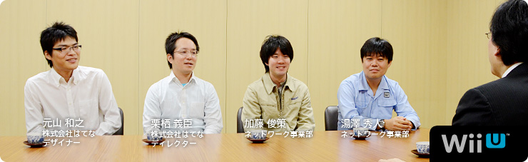 本文の一部を引用される場合は、必ず、本ページのURLを明記、または本ページへのリンクをしていただくようお願いいたします。 1. “ゲーム機ならではのブラウザー” 2. 「Miiがいるだけで」 3. “共感” 4. “クラウド型ゲーム日記” 岩田 Miiverse プロデュース篇につづいて 第２部をはじめます。 よろしくお願いします。 一同 よろしくお願いします。 岩田 では最初に自己紹介と、 『Miiverse』をつくるうえで何を担当したか、 湯澤さんからお願いします。 湯澤 はい。ネットワーク事業部の湯澤です。 主に、『Miiverse』全体の仕様検討、 サーバー関係のシステム設計と、 はてな（※1）さんとの調整役を担当しました。 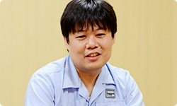 ※1 はてな＝株式会社はてな。「はてなブックマーク」「はてなダイアリー（はてなブログ）」をはじめとする、「はてな」の各サービスを開発し、インターネット上で運営を行う。設立は２００１年。本社は京都市。 加藤 ネットワーク事業部の加藤です。 『Miiverse』とWii U上で動くゲームが やりとりするためのライブラリーを、 電遊社（※2）さんという会社といっしょに開発しました。 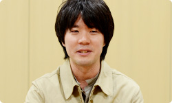 ※2 電遊社＝京都のゲーム開発会社。携帯ゲーム機「ポケモンミニ」のソフト開発や、「ニンテンドーゾーン」や『出前チャンネル』の開発協力、さらにニンテンドー3DSでは『いつの間に交換日記』のほか、「ゲームメモ」の開発を行ってきた。２００２年設立。 栗栖 こんにちは。はてなの栗栖と申します。 はてな側で『Miiverse』のディレクションを担当しました。 よろしくお願いします。 岩田 よろしくお願いします。 元山 こんにちは。はてなの元山です。 『Miiverse』のＵＩ（※3）のデザインを主に担当しました。 よろしくお願いします。 ※3 ＵＩ＝ユーザー・インターフェイスの略称。コンピューターを操作するときの画面表示、ウィンドウ、メニューなどの表現や操作感を指す。 岩田 よろしくお願いします。 今日は『Miiverse』をつくっていく過程のなかで 見えてきた手ごたえについて、 お話をお訊きしたいと思っています。 最初に『Miiverse』の第一印象を訊かせてもらえますか？ 湯澤 はい。わたしは任天堂に入社する前、 前職ではウェブサービスを 数多く立ち上げてきたという経験もありましたので、 『Miiverse』のことを聞いたときは、 「ぜひ、わたしにやらせてください」 と手を挙げて、担当になりました。 岩田 第一印象から、「自分の領域の話がきた・・・！」 という感じだったんですね（笑）。 加藤さんは、どうでしたか？ 加藤 最初に『Miiverse』のことを聞いたのは スタッフとしてではなく、水木（潔）さん（※4）から 「共感ネットワークをやります」という、 急な案内があったときでした。 なので、まだ誰が担当するのかも決まってなくて、 「場は騒然」といった感じで（笑）。 でも、わたしはそれを聞いて、 すごく魅力的に思ったんです。 ※4 水木潔＝ネットワーク事業部所属。『Miiverse』のプロデューサー。 社長が訊く『ニンテンドー3DS』内蔵ソフト篇に登場。 岩田 最初、どんなところに魅力を感じましたか？ 加藤 これまで『うごくメモ帳』（※5）や、 『Miiコンテストチャンネル』（※6）など、 お客さんが投稿するサービスはありましたけど、 『Miiverse』は本体にはじめから内蔵された 新しいネットワークサービスなので、 とても魅力を感じました。 「すごくやりたい！」と思っていたところ、 声をかけてもらいました。 ※5 『うごくメモ帳』＝ニンテンドーDSi、DSiLLに内蔵されたタッチペンで手書きメモを作成できるソフト。何枚も書いたメモを再生して、パラパラマンガ（動画）をつくることもできる。また、インターネットに接続すれば、『うごくメモ帳』でつくった自分の「うごメモ」を公開したり、公開されているほかの人の「うごメモ」を見ることができる。 ※6 『Miiコンテストチャンネル』＝Wiiチャンネルのひとつ。自分がつくったMiiを投稿してほかの人に見てもらったり、ほかの人がつくったMiiをもらったりすることができる。また、「コンテスト」のテーマに沿ってMiiをつくって応募したり、ほかの人が応募したMiiを審査したりできる。 岩田 きっと「担当させてくれオーラ」が 出ていたんでしょうね（笑）。 栗栖さんはどうでしたか？ 栗栖 はい。わたしは近藤（淳也）さん（※7）から 『Miiverse』の話を聞きました。 ゲームとつながってスクリーンショットや メッセージを投稿したりするコミュニティサービスと聞いて、 「ぜひやってみたい」と思いました。 それに、わたしは以前「うごメモはてな」（※8）の エンジニアリングディレクターとして、 世界版「Flipnote Hatena」のリリースを担当していたんですが、 その直後に別の仕事に移ってしまって、世界中のユーザーが 「うごメモ」を投稿する様子を見られなかったんです。 でも今回は、海外からサービスがスタートする（※9）ので、 「それも楽しみな要素のひとつだな」と思いました。 ※7 近藤淳也さん＝株式会社はてな代表取締役社長。 社長が訊く『ニンテンドーDSi』うごくメモ帳篇に登場。 ※8 「うごメモはてな」＝『うごくメモ帳』で書かれた作品を、パソコンやニンテンドーDSiブラウザーなどから楽しめるウェブサイト。 ※9 海外からサービスがスタートする＝Wii Uの発売日は、アメリカでは２０１２年１１月１８日、ヨーロッパでは２０１２年１１月３０日予定。日本では２０１２年１２月８日発売予定。 岩田 元山さんはどうですか？ 元山 僕はそれまで「はてなブックマーク」（※10）の パソコンや、iPhoneなどのスマートフォンデバイスに向けた サービスのデザインを担当していたので、 正直、最初に話があったときは、 未経験のゲーム機のデザインになるので、 「僕で大丈夫だろうか・・・」と迷ったんです。 でも、これから自分が仕事をしていくなかで、 「新しい経験として価値がある」と思って、 参加させてもらいました。 ※10 「はてなブックマーク」＝気に入ったウェブページをインターネット上で管理できるサービス。ほかの人が気に入ったページも知ることができ、ウェブで情報を探すサービスとして使われている。 岩田 少なくともみなさん、第一印象では 「面白そう」と思っていただけたようですが、 「未発売のプラットフォームの基幹サービスを いっしょにつくる」というはじめての体験なので、 「どう考えかたをそろえるか？」ということが 最初の課題だったんじゃないかと思います。 湯澤さんと栗栖さんの間で、 どんなやりとりがあったんですか？ 湯澤 一般のウェブサイトを開発する場合、 ブラウザーはすでにあるものという前提で 開発することが多いですよね。 でも今回はブラウザー自身も開発中だったので、 とりあえず「何ができるか」は置いておいて、 「どういう機能をお客さんに提供したいか」について ディスカッションするところからはじめました。 岩田 それはどんなふうに行われたんですか？ 栗栖 ベースとなる案を 湯澤さんや水木さんに考えてもらって、 定例会でじっくり話を詰めたり、 グループウェア（※11）でやりとりをしながら 決めていきました。 ※11 グループウェア＝組織内などでコンピューターネットワークを活用した情報共有のためのソフトウェア。 岩田 はてなさんと任天堂は、 物理的に会社の距離が近かったことも メリットでしたよね。 同じ京都市内なので ２０分あれば、双方に会いにいけますから。 湯澤 はい。近さは積極的に活用しました。 あと、Wii U GamePadができていないころは、 手で持ったときの感触を確かめるため、 元山さんにダミーのモックアップ（模型）をつくってもらって 検討したりもしました。 元山 あの・・・今日、それを持ってきました。 粗末なもので、大変申し訳ないんですけど・・・。 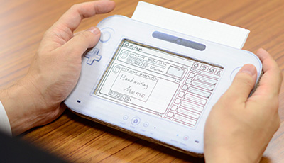 岩田 あ、ダンボール製ですか（笑）。 元山 はい。画面部分のフタが開いて、 上部分に紙を差し込んで、画面を変えられます。 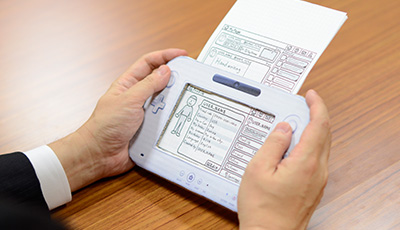 岩田 紙を差し込めるっていうのが、 たまらないですね（笑）。 一同 （笑）
Wii U GamePad 篇 Miiverse プロデュース 篇 Miiverse 開発スタッフ 篇 インターネットブラウザー 篇 Wii U Chat 篇 New スーパーマリオブラザーズ U 篇 ZombiU（ゾンビU） 篇 Nintendo×JOYSOUND Wii カラオケ U 篇 Nintendo Land 篇 Nintendo TVii 篇 Wii Street U powered by Google 篇 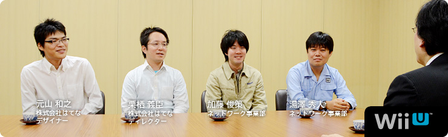 本文の一部を引用される場合は、必ず、本ページのURLを明記、または本ページへのリンクをしていただくようお願いいたします。 1. “ゲーム機ならではのブラウザー” 2. 「Miiがいるだけで」 3. “共感” 4. “クラウド型ゲーム日記” 岩田 Miiverse プロデュース篇につづいて 第２部をはじめます。 よろしくお願いします。 一同 よろしくお願いします。 岩田 では最初に自己紹介と、 『Miiverse』をつくるうえで何を担当したか、 湯澤さんからお願いします。 湯澤 はい。ネットワーク事業部の湯澤です。 主に、『Miiverse』全体の仕様検討、 サーバー関係のシステム設計と、 はてな（※1）さんとの調整役を担当しました。 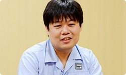 ※1 はてな＝株式会社はてな。「はてなブックマーク」「はてなダイアリー（はてなブログ）」をはじめとする、「はてな」の各サービスを開発し、インターネット上で運営を行う。設立は２００１年。本社は京都市。 加藤 ネットワーク事業部の加藤です。 『Miiverse』とWii U上で動くゲームが やりとりするためのライブラリーを、 電遊社（※2）さんという会社といっしょに開発しました。 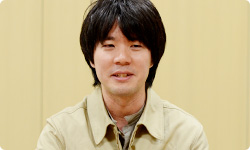 ※2 電遊社＝京都のゲーム開発会社。携帯ゲーム機「ポケモンミニ」のソフト開発や、「ニンテンドーゾーン」や『出前チャンネル』の開発協力、さらにニンテンドー3DSでは『いつの間に交換日記』のほか、「ゲームメモ」の開発を行ってきた。２００２年設立。 栗栖 こんにちは。はてなの栗栖と申します。 はてな側で『Miiverse』のディレクションを担当しました。 よろしくお願いします。 岩田 よろしくお願いします。 元山 こんにちは。はてなの元山です。 『Miiverse』のＵＩ（※3）のデザインを主に担当しました。 よろしくお願いします。 ※3 ＵＩ＝ユーザー・インターフェイスの略称。コンピューターを操作するときの画面表示、ウィンドウ、メニューなどの表現や操作感を指す。 岩田 よろしくお願いします。 今日は『Miiverse』をつくっていく過程のなかで 見えてきた手ごたえについて、 お話をお訊きしたいと思っています。 最初に『Miiverse』の第一印象を訊かせてもらえますか？ 湯澤 はい。わたしは任天堂に入社する前、 前職ではウェブサービスを 数多く立ち上げてきたという経験もありましたので、 『Miiverse』のことを聞いたときは、 「ぜひ、わたしにやらせてください」 と手を挙げて、担当になりました。 岩田 第一印象から、「自分の領域の話がきた・・・！」 という感じだったんですね（笑）。 加藤さんは、どうでしたか？ 加藤 最初に『Miiverse』のことを聞いたのは スタッフとしてではなく、水木（潔）さん（※4）から 「共感ネットワークをやります」という、 急な案内があったときでした。 なので、まだ誰が担当するのかも決まってなくて、 「場は騒然」といった感じで（笑）。 でも、わたしはそれを聞いて、 すごく魅力的に思ったんです。 ※4 水木潔＝ネットワーク事業部所属。『Miiverse』のプロデューサー。 社長が訊く『ニンテンドー3DS』内蔵ソフト篇に登場。 岩田 最初、どんなところに魅力を感じましたか？ 加藤 これまで『うごくメモ帳』（※5）や、 『Miiコンテストチャンネル』（※6）など、 お客さんが投稿するサービスはありましたけど、 『Miiverse』は本体にはじめから内蔵された 新しいネットワークサービスなので、 とても魅力を感じました。 「すごくやりたい！」と思っていたところ、 声をかけてもらいました。 ※5 『うごくメモ帳』＝ニンテンドーDSi、DSiLLに内蔵されたタッチペンで手書きメモを作成できるソフト。何枚も書いたメモを再生して、パラパラマンガ（動画）をつくることもできる。また、インターネットに接続すれば、『うごくメモ帳』でつくった自分の「うごメモ」を公開したり、公開されているほかの人の「うごメモ」を見ることができる。 ※6 『Miiコンテストチャンネル』＝Wiiチャンネルのひとつ。自分がつくったMiiを投稿してほかの人に見てもらったり、ほかの人がつくったMiiをもらったりすることができる。また、「コンテスト」のテーマに沿ってMiiをつくって応募したり、ほかの人が応募したMiiを審査したりできる。 岩田 きっと「担当させてくれオーラ」が 出ていたんでしょうね（笑）。 栗栖さんはどうでしたか？ 栗栖 はい。わたしは近藤（淳也）さん（※7）から 『Miiverse』の話を聞きました。 ゲームとつながってスクリーンショットや メッセージを投稿したりするコミュニティサービスと聞いて、 「ぜひやってみたい」と思いました。 それに、わたしは以前「うごメモはてな」（※8）の エンジニアリングディレクターとして、 世界版「Flipnote Hatena」のリリースを担当していたんですが、 その直後に別の仕事に移ってしまって、世界中のユーザーが 「うごメモ」を投稿する様子を見られなかったんです。 でも今回は、海外からサービスがスタートする（※9）ので、 「それも楽しみな要素のひとつだな」と思いました。 ※7 近藤淳也さん＝株式会社はてな代表取締役社長。 社長が訊く『ニンテンドーDSi』うごくメモ帳篇に登場。 ※8 「うごメモはてな」＝『うごくメモ帳』で書かれた作品を、パソコンやニンテンドーDSiブラウザーなどから楽しめるウェブサイト。 ※9 海外からサービスがスタートする＝Wii Uの発売日は、アメリカでは２０１２年１１月１８日、ヨーロッパでは２０１２年１１月３０日予定。日本では２０１２年１２月８日発売予定。 岩田 元山さんはどうですか？ 元山 僕はそれまで「はてなブックマーク」（※10）の パソコンや、iPhoneなどのスマートフォンデバイスに向けた サービスのデザインを担当していたので、 正直、最初に話があったときは、 未経験のゲーム機のデザインになるので、 「僕で大丈夫だろうか・・・」と迷ったんです。 でも、これから自分が仕事をしていくなかで、 「新しい経験として価値がある」と思って、 参加させてもらいました。 ※10 「はてなブックマーク」＝気に入ったウェブページをインターネット上で管理できるサービス。ほかの人が気に入ったページも知ることができ、ウェブで情報を探すサービスとして使われている。 岩田 少なくともみなさん、第一印象では 「面白そう」と思っていただけたようですが、 「未発売のプラットフォームの基幹サービスを いっしょにつくる」というはじめての体験なので、 「どう考えかたをそろえるか？」ということが 最初の課題だったんじゃないかと思います。 湯澤さんと栗栖さんの間で、 どんなやりとりがあったんですか？ 湯澤 一般のウェブサイトを開発する場合、 ブラウザーはすでにあるものという前提で 開発することが多いですよね。 でも今回はブラウザー自身も開発中だったので、 とりあえず「何ができるか」は置いておいて、 「どういう機能をお客さんに提供したいか」について ディスカッションするところからはじめました。 岩田 それはどんなふうに行われたんですか？ 栗栖 ベースとなる案を 湯澤さんや水木さんに考えてもらって、 定例会でじっくり話を詰めたり、 グループウェア（※11）でやりとりをしながら 決めていきました。 ※11 グループウェア＝組織内などでコンピューターネットワークを活用した情報共有のためのソフトウェア。 岩田 はてなさんと任天堂は、 物理的に会社の距離が近かったことも メリットでしたよね。 同じ京都市内なので ２０分あれば、双方に会いにいけますから。 湯澤 はい。近さは積極的に活用しました。 あと、Wii U GamePadができていないころは、 手で持ったときの感触を確かめるため、 元山さんにダミーのモックアップ（模型）をつくってもらって 検討したりもしました。 元山 あの・・・今日、それを持ってきました。 粗末なもので、大変申し訳ないんですけど・・・。 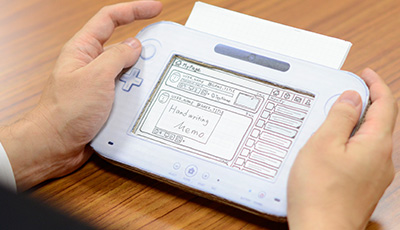 岩田 あ、ダンボール製ですか（笑）。 元山 はい。画面部分のフタが開いて、 上部分に紙を差し込んで、画面を変えられます。 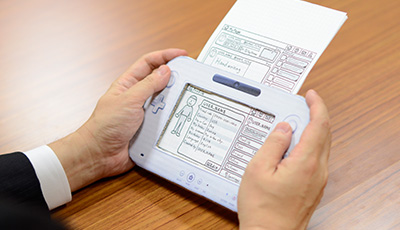 岩田 紙を差し込めるっていうのが、 たまらないですね（笑）。 一同 （笑）
Miiverse プロデュース 篇 Miiverse 開発スタッフ 篇 インターネットブラウザー 篇 Wii U Chat 篇 New スーパーマリオブラザーズ U 篇 ZombiU（ゾンビU） 篇 Nintendo×JOYSOUND Wii カラオケ U 篇 Nintendo Land 篇 Nintendo TVii 篇 Wii Street U powered by Google 篇 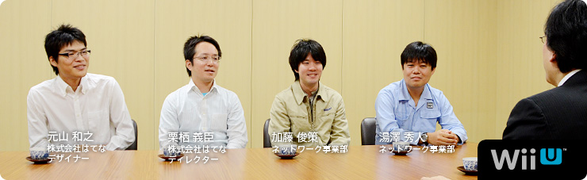 本文の一部を引用される場合は、必ず、本ページのURLを明記、または本ページへのリンクをしていただくようお願いいたします。 1. “ゲーム機ならではのブラウザー” 2. 「Miiがいるだけで」 3. “共感” 4. “クラウド型ゲーム日記” 岩田 Miiverse プロデュース篇につづいて 第２部をはじめます。 よろしくお願いします。 一同 よろしくお願いします。 岩田 では最初に自己紹介と、 『Miiverse』をつくるうえで何を担当したか、 湯澤さんからお願いします。 湯澤 はい。ネットワーク事業部の湯澤です。 主に、『Miiverse』全体の仕様検討、 サーバー関係のシステム設計と、 はてな（※1）さんとの調整役を担当しました。 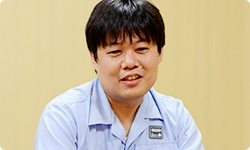 ※1 はてな＝株式会社はてな。「はてなブックマーク」「はてなダイアリー（はてなブログ）」をはじめとする、「はてな」の各サービスを開発し、インターネット上で運営を行う。設立は２００１年。本社は京都市。 加藤 ネットワーク事業部の加藤です。 『Miiverse』とWii U上で動くゲームが やりとりするためのライブラリーを、 電遊社（※2）さんという会社といっしょに開発しました。 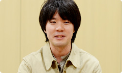 ※2 電遊社＝京都のゲーム開発会社。携帯ゲーム機「ポケモンミニ」のソフト開発や、「ニンテンドーゾーン」や『出前チャンネル』の開発協力、さらにニンテンドー3DSでは『いつの間に交換日記』のほか、「ゲームメモ」の開発を行ってきた。２００２年設立。 栗栖 こんにちは。はてなの栗栖と申します。 はてな側で『Miiverse』のディレクションを担当しました。 よろしくお願いします。 岩田 よろしくお願いします。 元山 こんにちは。はてなの元山です。 『Miiverse』のＵＩ（※3）のデザインを主に担当しました。 よろしくお願いします。 ※3 ＵＩ＝ユーザー・インターフェイスの略称。コンピューターを操作するときの画面表示、ウィンドウ、メニューなどの表現や操作感を指す。 岩田 よろしくお願いします。 今日は『Miiverse』をつくっていく過程のなかで 見えてきた手ごたえについて、 お話をお訊きしたいと思っています。 最初に『Miiverse』の第一印象を訊かせてもらえますか？ 湯澤 はい。わたしは任天堂に入社する前、 前職ではウェブサービスを 数多く立ち上げてきたという経験もありましたので、 『Miiverse』のことを聞いたときは、 「ぜひ、わたしにやらせてください」 と手を挙げて、担当になりました。 岩田 第一印象から、「自分の領域の話がきた・・・！」 という感じだったんですね（笑）。 加藤さんは、どうでしたか？ 加藤 最初に『Miiverse』のことを聞いたのは スタッフとしてではなく、水木（潔）さん（※4）から 「共感ネットワークをやります」という、 急な案内があったときでした。 なので、まだ誰が担当するのかも決まってなくて、 「場は騒然」といった感じで（笑）。 でも、わたしはそれを聞いて、 すごく魅力的に思ったんです。 ※4 水木潔＝ネットワーク事業部所属。『Miiverse』のプロデューサー。 社長が訊く『ニンテンドー3DS』内蔵ソフト篇に登場。 岩田 最初、どんなところに魅力を感じましたか？ 加藤 これまで『うごくメモ帳』（※5）や、 『Miiコンテストチャンネル』（※6）など、 お客さんが投稿するサービスはありましたけど、 『Miiverse』は本体にはじめから内蔵された 新しいネットワークサービスなので、 とても魅力を感じました。 「すごくやりたい！」と思っていたところ、 声をかけてもらいました。 ※5 『うごくメモ帳』＝ニンテンドーDSi、DSiLLに内蔵されたタッチペンで手書きメモを作成できるソフト。何枚も書いたメモを再生して、パラパラマンガ（動画）をつくることもできる。また、インターネットに接続すれば、『うごくメモ帳』でつくった自分の「うごメモ」を公開したり、公開されているほかの人の「うごメモ」を見ることができる。 ※6 『Miiコンテストチャンネル』＝Wiiチャンネルのひとつ。自分がつくったMiiを投稿してほかの人に見てもらったり、ほかの人がつくったMiiをもらったりすることができる。また、「コンテスト」のテーマに沿ってMiiをつくって応募したり、ほかの人が応募したMiiを審査したりできる。 岩田 きっと「担当させてくれオーラ」が 出ていたんでしょうね（笑）。 栗栖さんはどうでしたか？ 栗栖 はい。わたしは近藤（淳也）さん（※7）から 『Miiverse』の話を聞きました。 ゲームとつながってスクリーンショットや メッセージを投稿したりするコミュニティサービスと聞いて、 「ぜひやってみたい」と思いました。 それに、わたしは以前「うごメモはてな」（※8）の エンジニアリングディレクターとして、 世界版「Flipnote Hatena」のリリースを担当していたんですが、 その直後に別の仕事に移ってしまって、世界中のユーザーが 「うごメモ」を投稿する様子を見られなかったんです。 でも今回は、海外からサービスがスタートする（※9）ので、 「それも楽しみな要素のひとつだな」と思いました。 ※7 近藤淳也さん＝株式会社はてな代表取締役社長。 社長が訊く『ニンテンドーDSi』うごくメモ帳篇に登場。 ※8 「うごメモはてな」＝『うごくメモ帳』で書かれた作品を、パソコンやニンテンドーDSiブラウザーなどから楽しめるウェブサイト。 ※9 海外からサービスがスタートする＝Wii Uの発売日は、アメリカでは２０１２年１１月１８日、ヨーロッパでは２０１２年１１月３０日予定。日本では２０１２年１２月８日発売予定。 岩田 元山さんはどうですか？ 元山 僕はそれまで「はてなブックマーク」（※10）の パソコンや、iPhoneなどのスマートフォンデバイスに向けた サービスのデザインを担当していたので、 正直、最初に話があったときは、 未経験のゲーム機のデザインになるので、 「僕で大丈夫だろうか・・・」と迷ったんです。 でも、これから自分が仕事をしていくなかで、 「新しい経験として価値がある」と思って、 参加させてもらいました。 ※10 「はてなブックマーク」＝気に入ったウェブページをインターネット上で管理できるサービス。ほかの人が気に入ったページも知ることができ、ウェブで情報を探すサービスとして使われている。 岩田 少なくともみなさん、第一印象では 「面白そう」と思っていただけたようですが、 「未発売のプラットフォームの基幹サービスを いっしょにつくる」というはじめての体験なので、 「どう考えかたをそろえるか？」ということが 最初の課題だったんじゃないかと思います。 湯澤さんと栗栖さんの間で、 どんなやりとりがあったんですか？ 湯澤 一般のウェブサイトを開発する場合、 ブラウザーはすでにあるものという前提で 開発することが多いですよね。 でも今回はブラウザー自身も開発中だったので、 とりあえず「何ができるか」は置いておいて、 「どういう機能をお客さんに提供したいか」について ディスカッションするところからはじめました。 岩田 それはどんなふうに行われたんですか？ 栗栖 ベースとなる案を 湯澤さんや水木さんに考えてもらって、 定例会でじっくり話を詰めたり、 グループウェア（※11）でやりとりをしながら 決めていきました。 ※11 グループウェア＝組織内などでコンピューターネットワークを活用した情報共有のためのソフトウェア。 岩田 はてなさんと任天堂は、 物理的に会社の距離が近かったことも メリットでしたよね。 同じ京都市内なので ２０分あれば、双方に会いにいけますから。 湯澤 はい。近さは積極的に活用しました。 あと、Wii U GamePadができていないころは、 手で持ったときの感触を確かめるため、 元山さんにダミーのモックアップ（模型）をつくってもらって 検討したりもしました。 元山 あの・・・今日、それを持ってきました。 粗末なもので、大変申し訳ないんですけど・・・。 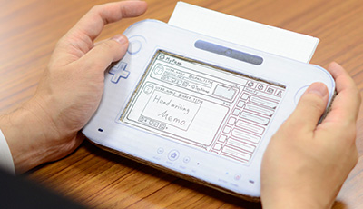 岩田 あ、ダンボール製ですか（笑）。 元山 はい。画面部分のフタが開いて、 上部分に紙を差し込んで、画面を変えられます。 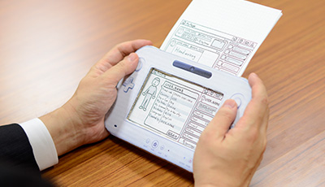 岩田 紙を差し込めるっていうのが、 たまらないですね（笑）。 一同 （笑）
Miiverse 開発スタッフ 篇 インターネットブラウザー 篇 Wii U Chat 篇 New スーパーマリオブラザーズ U 篇 ZombiU（ゾンビU） 篇 Nintendo×JOYSOUND Wii カラオケ U 篇 Nintendo Land 篇 Nintendo TVii 篇 Wii Street U powered by Google 篇 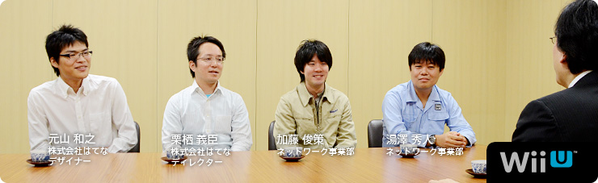 本文の一部を引用される場合は、必ず、本ページのURLを明記、または本ページへのリンクをしていただくようお願いいたします。 1. “ゲーム機ならではのブラウザー” 2. 「Miiがいるだけで」 3. “共感” 4. “クラウド型ゲーム日記” 岩田 Miiverse プロデュース篇につづいて 第２部をはじめます。 よろしくお願いします。 一同 よろしくお願いします。 岩田 では最初に自己紹介と、 『Miiverse』をつくるうえで何を担当したか、 湯澤さんからお願いします。 湯澤 はい。ネットワーク事業部の湯澤です。 主に、『Miiverse』全体の仕様検討、 サーバー関係のシステム設計と、 はてな（※1）さんとの調整役を担当しました。 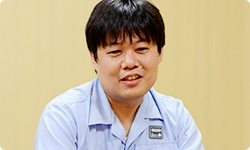 ※1 はてな＝株式会社はてな。「はてなブックマーク」「はてなダイアリー（はてなブログ）」をはじめとする、「はてな」の各サービスを開発し、インターネット上で運営を行う。設立は２００１年。本社は京都市。 加藤 ネットワーク事業部の加藤です。 『Miiverse』とWii U上で動くゲームが やりとりするためのライブラリーを、 電遊社（※2）さんという会社といっしょに開発しました。 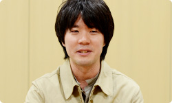 ※2 電遊社＝京都のゲーム開発会社。携帯ゲーム機「ポケモンミニ」のソフト開発や、「ニンテンドーゾーン」や『出前チャンネル』の開発協力、さらにニンテンドー3DSでは『いつの間に交換日記』のほか、「ゲームメモ」の開発を行ってきた。２００２年設立。 栗栖 こんにちは。はてなの栗栖と申します。 はてな側で『Miiverse』のディレクションを担当しました。 よろしくお願いします。 岩田 よろしくお願いします。 元山 こんにちは。はてなの元山です。 『Miiverse』のＵＩ（※3）のデザインを主に担当しました。 よろしくお願いします。 ※3 ＵＩ＝ユーザー・インターフェイスの略称。コンピューターを操作するときの画面表示、ウィンドウ、メニューなどの表現や操作感を指す。 岩田 よろしくお願いします。 今日は『Miiverse』をつくっていく過程のなかで 見えてきた手ごたえについて、 お話をお訊きしたいと思っています。 最初に『Miiverse』の第一印象を訊かせてもらえますか？ 湯澤 はい。わたしは任天堂に入社する前、 前職ではウェブサービスを 数多く立ち上げてきたという経験もありましたので、 『Miiverse』のことを聞いたときは、 「ぜひ、わたしにやらせてください」 と手を挙げて、担当になりました。 岩田 第一印象から、「自分の領域の話がきた・・・！」 という感じだったんですね（笑）。 加藤さんは、どうでしたか？ 加藤 最初に『Miiverse』のことを聞いたのは スタッフとしてではなく、水木（潔）さん（※4）から 「共感ネットワークをやります」という、 急な案内があったときでした。 なので、まだ誰が担当するのかも決まってなくて、 「場は騒然」といった感じで（笑）。 でも、わたしはそれを聞いて、 すごく魅力的に思ったんです。 ※4 水木潔＝ネットワーク事業部所属。『Miiverse』のプロデューサー。 社長が訊く『ニンテンドー3DS』内蔵ソフト篇に登場。 岩田 最初、どんなところに魅力を感じましたか？ 加藤 これまで『うごくメモ帳』（※5）や、 『Miiコンテストチャンネル』（※6）など、 お客さんが投稿するサービスはありましたけど、 『Miiverse』は本体にはじめから内蔵された 新しいネットワークサービスなので、 とても魅力を感じました。 「すごくやりたい！」と思っていたところ、 声をかけてもらいました。 ※5 『うごくメモ帳』＝ニンテンドーDSi、DSiLLに内蔵されたタッチペンで手書きメモを作成できるソフト。何枚も書いたメモを再生して、パラパラマンガ（動画）をつくることもできる。また、インターネットに接続すれば、『うごくメモ帳』でつくった自分の「うごメモ」を公開したり、公開されているほかの人の「うごメモ」を見ることができる。 ※6 『Miiコンテストチャンネル』＝Wiiチャンネルのひとつ。自分がつくったMiiを投稿してほかの人に見てもらったり、ほかの人がつくったMiiをもらったりすることができる。また、「コンテスト」のテーマに沿ってMiiをつくって応募したり、ほかの人が応募したMiiを審査したりできる。 岩田 きっと「担当させてくれオーラ」が 出ていたんでしょうね（笑）。 栗栖さんはどうでしたか？ 栗栖 はい。わたしは近藤（淳也）さん（※7）から 『Miiverse』の話を聞きました。 ゲームとつながってスクリーンショットや メッセージを投稿したりするコミュニティサービスと聞いて、 「ぜひやってみたい」と思いました。 それに、わたしは以前「うごメモはてな」（※8）の エンジニアリングディレクターとして、 世界版「Flipnote Hatena」のリリースを担当していたんですが、 その直後に別の仕事に移ってしまって、世界中のユーザーが 「うごメモ」を投稿する様子を見られなかったんです。 でも今回は、海外からサービスがスタートする（※9）ので、 「それも楽しみな要素のひとつだな」と思いました。 ※7 近藤淳也さん＝株式会社はてな代表取締役社長。 社長が訊く『ニンテンドーDSi』うごくメモ帳篇に登場。 ※8 「うごメモはてな」＝『うごくメモ帳』で書かれた作品を、パソコンやニンテンドーDSiブラウザーなどから楽しめるウェブサイト。 ※9 海外からサービスがスタートする＝Wii Uの発売日は、アメリカでは２０１２年１１月１８日、ヨーロッパでは２０１２年１１月３０日予定。日本では２０１２年１２月８日発売予定。 岩田 元山さんはどうですか？ 元山 僕はそれまで「はてなブックマーク」（※10）の パソコンや、iPhoneなどのスマートフォンデバイスに向けた サービスのデザインを担当していたので、 正直、最初に話があったときは、 未経験のゲーム機のデザインになるので、 「僕で大丈夫だろうか・・・」と迷ったんです。 でも、これから自分が仕事をしていくなかで、 「新しい経験として価値がある」と思って、 参加させてもらいました。 ※10 「はてなブックマーク」＝気に入ったウェブページをインターネット上で管理できるサービス。ほかの人が気に入ったページも知ることができ、ウェブで情報を探すサービスとして使われている。 岩田 少なくともみなさん、第一印象では 「面白そう」と思っていただけたようですが、 「未発売のプラットフォームの基幹サービスを いっしょにつくる」というはじめての体験なので、 「どう考えかたをそろえるか？」ということが 最初の課題だったんじゃないかと思います。 湯澤さんと栗栖さんの間で、 どんなやりとりがあったんですか？ 湯澤 一般のウェブサイトを開発する場合、 ブラウザーはすでにあるものという前提で 開発することが多いですよね。 でも今回はブラウザー自身も開発中だったので、 とりあえず「何ができるか」は置いておいて、 「どういう機能をお客さんに提供したいか」について ディスカッションするところからはじめました。 岩田 それはどんなふうに行われたんですか？ 栗栖 ベースとなる案を 湯澤さんや水木さんに考えてもらって、 定例会でじっくり話を詰めたり、 グループウェア（※11）でやりとりをしながら 決めていきました。 ※11 グループウェア＝組織内などでコンピューターネットワークを活用した情報共有のためのソフトウェア。 岩田 はてなさんと任天堂は、 物理的に会社の距離が近かったことも メリットでしたよね。 同じ京都市内なので ２０分あれば、双方に会いにいけますから。 湯澤 はい。近さは積極的に活用しました。 あと、Wii U GamePadができていないころは、 手で持ったときの感触を確かめるため、 元山さんにダミーのモックアップ（模型）をつくってもらって 検討したりもしました。 元山 あの・・・今日、それを持ってきました。 粗末なもので、大変申し訳ないんですけど・・・。 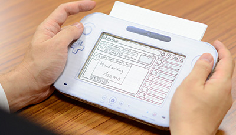 岩田 あ、ダンボール製ですか（笑）。 元山 はい。画面部分のフタが開いて、 上部分に紙を差し込んで、画面を変えられます。 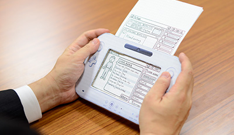 岩田 紙を差し込めるっていうのが、 たまらないですね（笑）。 一同 （笑）
インターネットブラウザー 篇 Wii U Chat 篇 New スーパーマリオブラザーズ U 篇 ZombiU（ゾンビU） 篇 Nintendo×JOYSOUND Wii カラオケ U 篇 Nintendo Land 篇 Nintendo TVii 篇 Wii Street U powered by Google 篇 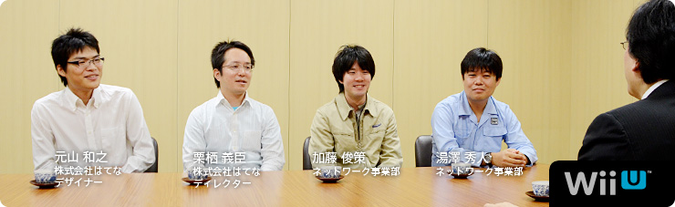 本文の一部を引用される場合は、必ず、本ページのURLを明記、または本ページへのリンクをしていただくようお願いいたします。 1. “ゲーム機ならではのブラウザー” 2. 「Miiがいるだけで」 3. “共感” 4. “クラウド型ゲーム日記” 岩田 Miiverse プロデュース篇につづいて 第２部をはじめます。 よろしくお願いします。 一同 よろしくお願いします。 岩田 では最初に自己紹介と、 『Miiverse』をつくるうえで何を担当したか、 湯澤さんからお願いします。 湯澤 はい。ネットワーク事業部の湯澤です。 主に、『Miiverse』全体の仕様検討、 サーバー関係のシステム設計と、 はてな（※1）さんとの調整役を担当しました。 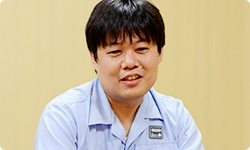 ※1 はてな＝株式会社はてな。「はてなブックマーク」「はてなダイアリー（はてなブログ）」をはじめとする、「はてな」の各サービスを開発し、インターネット上で運営を行う。設立は２００１年。本社は京都市。 加藤 ネットワーク事業部の加藤です。 『Miiverse』とWii U上で動くゲームが やりとりするためのライブラリーを、 電遊社（※2）さんという会社といっしょに開発しました。 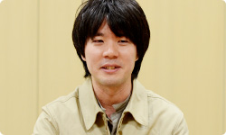 ※2 電遊社＝京都のゲーム開発会社。携帯ゲーム機「ポケモンミニ」のソフト開発や、「ニンテンドーゾーン」や『出前チャンネル』の開発協力、さらにニンテンドー3DSでは『いつの間に交換日記』のほか、「ゲームメモ」の開発を行ってきた。２００２年設立。 栗栖 こんにちは。はてなの栗栖と申します。 はてな側で『Miiverse』のディレクションを担当しました。 よろしくお願いします。 岩田 よろしくお願いします。 元山 こんにちは。はてなの元山です。 『Miiverse』のＵＩ（※3）のデザインを主に担当しました。 よろしくお願いします。 ※3 ＵＩ＝ユーザー・インターフェイスの略称。コンピューターを操作するときの画面表示、ウィンドウ、メニューなどの表現や操作感を指す。 岩田 よろしくお願いします。 今日は『Miiverse』をつくっていく過程のなかで 見えてきた手ごたえについて、 お話をお訊きしたいと思っています。 最初に『Miiverse』の第一印象を訊かせてもらえますか？ 湯澤 はい。わたしは任天堂に入社する前、 前職ではウェブサービスを 数多く立ち上げてきたという経験もありましたので、 『Miiverse』のことを聞いたときは、 「ぜひ、わたしにやらせてください」 と手を挙げて、担当になりました。 岩田 第一印象から、「自分の領域の話がきた・・・！」 という感じだったんですね（笑）。 加藤さんは、どうでしたか？ 加藤 最初に『Miiverse』のことを聞いたのは スタッフとしてではなく、水木（潔）さん（※4）から 「共感ネットワークをやります」という、 急な案内があったときでした。 なので、まだ誰が担当するのかも決まってなくて、 「場は騒然」といった感じで（笑）。 でも、わたしはそれを聞いて、 すごく魅力的に思ったんです。 ※4 水木潔＝ネットワーク事業部所属。『Miiverse』のプロデューサー。 社長が訊く『ニンテンドー3DS』内蔵ソフト篇に登場。 岩田 最初、どんなところに魅力を感じましたか？ 加藤 これまで『うごくメモ帳』（※5）や、 『Miiコンテストチャンネル』（※6）など、 お客さんが投稿するサービスはありましたけど、 『Miiverse』は本体にはじめから内蔵された 新しいネットワークサービスなので、 とても魅力を感じました。 「すごくやりたい！」と思っていたところ、 声をかけてもらいました。 ※5 『うごくメモ帳』＝ニンテンドーDSi、DSiLLに内蔵されたタッチペンで手書きメモを作成できるソフト。何枚も書いたメモを再生して、パラパラマンガ（動画）をつくることもできる。また、インターネットに接続すれば、『うごくメモ帳』でつくった自分の「うごメモ」を公開したり、公開されているほかの人の「うごメモ」を見ることができる。 ※6 『Miiコンテストチャンネル』＝Wiiチャンネルのひとつ。自分がつくったMiiを投稿してほかの人に見てもらったり、ほかの人がつくったMiiをもらったりすることができる。また、「コンテスト」のテーマに沿ってMiiをつくって応募したり、ほかの人が応募したMiiを審査したりできる。 岩田 きっと「担当させてくれオーラ」が 出ていたんでしょうね（笑）。 栗栖さんはどうでしたか？ 栗栖 はい。わたしは近藤（淳也）さん（※7）から 『Miiverse』の話を聞きました。 ゲームとつながってスクリーンショットや メッセージを投稿したりするコミュニティサービスと聞いて、 「ぜひやってみたい」と思いました。 それに、わたしは以前「うごメモはてな」（※8）の エンジニアリングディレクターとして、 世界版「Flipnote Hatena」のリリースを担当していたんですが、 その直後に別の仕事に移ってしまって、世界中のユーザーが 「うごメモ」を投稿する様子を見られなかったんです。 でも今回は、海外からサービスがスタートする（※9）ので、 「それも楽しみな要素のひとつだな」と思いました。 ※7 近藤淳也さん＝株式会社はてな代表取締役社長。 社長が訊く『ニンテンドーDSi』うごくメモ帳篇に登場。 ※8 「うごメモはてな」＝『うごくメモ帳』で書かれた作品を、パソコンやニンテンドーDSiブラウザーなどから楽しめるウェブサイト。 ※9 海外からサービスがスタートする＝Wii Uの発売日は、アメリカでは２０１２年１１月１８日、ヨーロッパでは２０１２年１１月３０日予定。日本では２０１２年１２月８日発売予定。 岩田 元山さんはどうですか？ 元山 僕はそれまで「はてなブックマーク」（※10）の パソコンや、iPhoneなどのスマートフォンデバイスに向けた サービスのデザインを担当していたので、 正直、最初に話があったときは、 未経験のゲーム機のデザインになるので、 「僕で大丈夫だろうか・・・」と迷ったんです。 でも、これから自分が仕事をしていくなかで、 「新しい経験として価値がある」と思って、 参加させてもらいました。 ※10 「はてなブックマーク」＝気に入ったウェブページをインターネット上で管理できるサービス。ほかの人が気に入ったページも知ることができ、ウェブで情報を探すサービスとして使われている。 岩田 少なくともみなさん、第一印象では 「面白そう」と思っていただけたようですが、 「未発売のプラットフォームの基幹サービスを いっしょにつくる」というはじめての体験なので、 「どう考えかたをそろえるか？」ということが 最初の課題だったんじゃないかと思います。 湯澤さんと栗栖さんの間で、 どんなやりとりがあったんですか？ 湯澤 一般のウェブサイトを開発する場合、 ブラウザーはすでにあるものという前提で 開発することが多いですよね。 でも今回はブラウザー自身も開発中だったので、 とりあえず「何ができるか」は置いておいて、 「どういう機能をお客さんに提供したいか」について ディスカッションするところからはじめました。 岩田 それはどんなふうに行われたんですか？ 栗栖 ベースとなる案を 湯澤さんや水木さんに考えてもらって、 定例会でじっくり話を詰めたり、 グループウェア（※11）でやりとりをしながら 決めていきました。 ※11 グループウェア＝組織内などでコンピューターネットワークを活用した情報共有のためのソフトウェア。 岩田 はてなさんと任天堂は、 物理的に会社の距離が近かったことも メリットでしたよね。 同じ京都市内なので ２０分あれば、双方に会いにいけますから。 湯澤 はい。近さは積極的に活用しました。 あと、Wii U GamePadができていないころは、 手で持ったときの感触を確かめるため、 元山さんにダミーのモックアップ（模型）をつくってもらって 検討したりもしました。 元山 あの・・・今日、それを持ってきました。 粗末なもので、大変申し訳ないんですけど・・・。 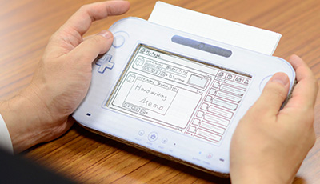 岩田 あ、ダンボール製ですか（笑）。 元山 はい。画面部分のフタが開いて、 上部分に紙を差し込んで、画面を変えられます。 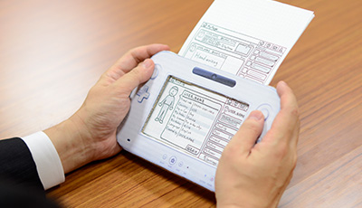 岩田 紙を差し込めるっていうのが、 たまらないですね（笑）。 一同 （笑）
Wii U Chat 篇 New スーパーマリオブラザーズ U 篇 ZombiU（ゾンビU） 篇 Nintendo×JOYSOUND Wii カラオケ U 篇 Nintendo Land 篇 Nintendo TVii 篇 Wii Street U powered by Google 篇 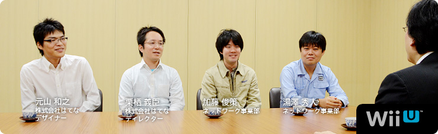 本文の一部を引用される場合は、必ず、本ページのURLを明記、または本ページへのリンクをしていただくようお願いいたします。 1. “ゲーム機ならではのブラウザー” 2. 「Miiがいるだけで」 3. “共感” 4. “クラウド型ゲーム日記” 岩田 Miiverse プロデュース篇につづいて 第２部をはじめます。 よろしくお願いします。 一同 よろしくお願いします。 岩田 では最初に自己紹介と、 『Miiverse』をつくるうえで何を担当したか、 湯澤さんからお願いします。 湯澤 はい。ネットワーク事業部の湯澤です。 主に、『Miiverse』全体の仕様検討、 サーバー関係のシステム設計と、 はてな（※1）さんとの調整役を担当しました。 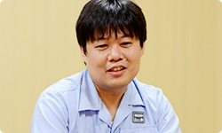 ※1 はてな＝株式会社はてな。「はてなブックマーク」「はてなダイアリー（はてなブログ）」をはじめとする、「はてな」の各サービスを開発し、インターネット上で運営を行う。設立は２００１年。本社は京都市。 加藤 ネットワーク事業部の加藤です。 『Miiverse』とWii U上で動くゲームが やりとりするためのライブラリーを、 電遊社（※2）さんという会社といっしょに開発しました。 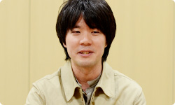 ※2 電遊社＝京都のゲーム開発会社。携帯ゲーム機「ポケモンミニ」のソフト開発や、「ニンテンドーゾーン」や『出前チャンネル』の開発協力、さらにニンテンドー3DSでは『いつの間に交換日記』のほか、「ゲームメモ」の開発を行ってきた。２００２年設立。 栗栖 こんにちは。はてなの栗栖と申します。 はてな側で『Miiverse』のディレクションを担当しました。 よろしくお願いします。 岩田 よろしくお願いします。 元山 こんにちは。はてなの元山です。 『Miiverse』のＵＩ（※3）のデザインを主に担当しました。 よろしくお願いします。 ※3 ＵＩ＝ユーザー・インターフェイスの略称。コンピューターを操作するときの画面表示、ウィンドウ、メニューなどの表現や操作感を指す。 岩田 よろしくお願いします。 今日は『Miiverse』をつくっていく過程のなかで 見えてきた手ごたえについて、 お話をお訊きしたいと思っています。 最初に『Miiverse』の第一印象を訊かせてもらえますか？ 湯澤 はい。わたしは任天堂に入社する前、 前職ではウェブサービスを 数多く立ち上げてきたという経験もありましたので、 『Miiverse』のことを聞いたときは、 「ぜひ、わたしにやらせてください」 と手を挙げて、担当になりました。 岩田 第一印象から、「自分の領域の話がきた・・・！」 という感じだったんですね（笑）。 加藤さんは、どうでしたか？ 加藤 最初に『Miiverse』のことを聞いたのは スタッフとしてではなく、水木（潔）さん（※4）から 「共感ネットワークをやります」という、 急な案内があったときでした。 なので、まだ誰が担当するのかも決まってなくて、 「場は騒然」といった感じで（笑）。 でも、わたしはそれを聞いて、 すごく魅力的に思ったんです。 ※4 水木潔＝ネットワーク事業部所属。『Miiverse』のプロデューサー。 社長が訊く『ニンテンドー3DS』内蔵ソフト篇に登場。 岩田 最初、どんなところに魅力を感じましたか？ 加藤 これまで『うごくメモ帳』（※5）や、 『Miiコンテストチャンネル』（※6）など、 お客さんが投稿するサービスはありましたけど、 『Miiverse』は本体にはじめから内蔵された 新しいネットワークサービスなので、 とても魅力を感じました。 「すごくやりたい！」と思っていたところ、 声をかけてもらいました。 ※5 『うごくメモ帳』＝ニンテンドーDSi、DSiLLに内蔵されたタッチペンで手書きメモを作成できるソフト。何枚も書いたメモを再生して、パラパラマンガ（動画）をつくることもできる。また、インターネットに接続すれば、『うごくメモ帳』でつくった自分の「うごメモ」を公開したり、公開されているほかの人の「うごメモ」を見ることができる。 ※6 『Miiコンテストチャンネル』＝Wiiチャンネルのひとつ。自分がつくったMiiを投稿してほかの人に見てもらったり、ほかの人がつくったMiiをもらったりすることができる。また、「コンテスト」のテーマに沿ってMiiをつくって応募したり、ほかの人が応募したMiiを審査したりできる。 岩田 きっと「担当させてくれオーラ」が 出ていたんでしょうね（笑）。 栗栖さんはどうでしたか？ 栗栖 はい。わたしは近藤（淳也）さん（※7）から 『Miiverse』の話を聞きました。 ゲームとつながってスクリーンショットや メッセージを投稿したりするコミュニティサービスと聞いて、 「ぜひやってみたい」と思いました。 それに、わたしは以前「うごメモはてな」（※8）の エンジニアリングディレクターとして、 世界版「Flipnote Hatena」のリリースを担当していたんですが、 その直後に別の仕事に移ってしまって、世界中のユーザーが 「うごメモ」を投稿する様子を見られなかったんです。 でも今回は、海外からサービスがスタートする（※9）ので、 「それも楽しみな要素のひとつだな」と思いました。 ※7 近藤淳也さん＝株式会社はてな代表取締役社長。 社長が訊く『ニンテンドーDSi』うごくメモ帳篇に登場。 ※8 「うごメモはてな」＝『うごくメモ帳』で書かれた作品を、パソコンやニンテンドーDSiブラウザーなどから楽しめるウェブサイト。 ※9 海外からサービスがスタートする＝Wii Uの発売日は、アメリカでは２０１２年１１月１８日、ヨーロッパでは２０１２年１１月３０日予定。日本では２０１２年１２月８日発売予定。 岩田 元山さんはどうですか？ 元山 僕はそれまで「はてなブックマーク」（※10）の パソコンや、iPhoneなどのスマートフォンデバイスに向けた サービスのデザインを担当していたので、 正直、最初に話があったときは、 未経験のゲーム機のデザインになるので、 「僕で大丈夫だろうか・・・」と迷ったんです。 でも、これから自分が仕事をしていくなかで、 「新しい経験として価値がある」と思って、 参加させてもらいました。 ※10 「はてなブックマーク」＝気に入ったウェブページをインターネット上で管理できるサービス。ほかの人が気に入ったページも知ることができ、ウェブで情報を探すサービスとして使われている。 岩田 少なくともみなさん、第一印象では 「面白そう」と思っていただけたようですが、 「未発売のプラットフォームの基幹サービスを いっしょにつくる」というはじめての体験なので、 「どう考えかたをそろえるか？」ということが 最初の課題だったんじゃないかと思います。 湯澤さんと栗栖さんの間で、 どんなやりとりがあったんですか？ 湯澤 一般のウェブサイトを開発する場合、 ブラウザーはすでにあるものという前提で 開発することが多いですよね。 でも今回はブラウザー自身も開発中だったので、 とりあえず「何ができるか」は置いておいて、 「どういう機能をお客さんに提供したいか」について ディスカッションするところからはじめました。 岩田 それはどんなふうに行われたんですか？ 栗栖 ベースとなる案を 湯澤さんや水木さんに考えてもらって、 定例会でじっくり話を詰めたり、 グループウェア（※11）でやりとりをしながら 決めていきました。 ※11 グループウェア＝組織内などでコンピューターネットワークを活用した情報共有のためのソフトウェア。 岩田 はてなさんと任天堂は、 物理的に会社の距離が近かったことも メリットでしたよね。 同じ京都市内なので ２０分あれば、双方に会いにいけますから。 湯澤 はい。近さは積極的に活用しました。 あと、Wii U GamePadができていないころは、 手で持ったときの感触を確かめるため、 元山さんにダミーのモックアップ（模型）をつくってもらって 検討したりもしました。 元山 あの・・・今日、それを持ってきました。 粗末なもので、大変申し訳ないんですけど・・・。 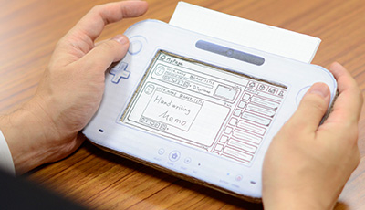 岩田 あ、ダンボール製ですか（笑）。 元山 はい。画面部分のフタが開いて、 上部分に紙を差し込んで、画面を変えられます。 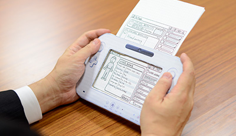 岩田 紙を差し込めるっていうのが、 たまらないですね（笑）。 一同 （笑）
New スーパーマリオブラザーズ U 篇 ZombiU（ゾンビU） 篇 Nintendo×JOYSOUND Wii カラオケ U 篇 Nintendo Land 篇 Nintendo TVii 篇 Wii Street U powered by Google 篇 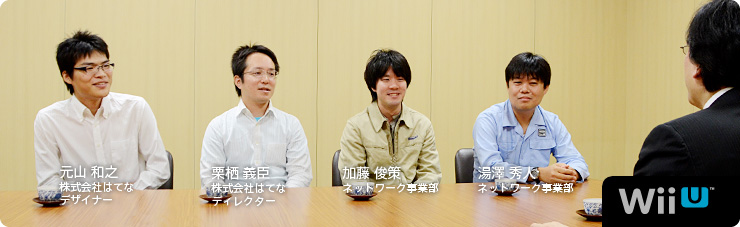 本文の一部を引用される場合は、必ず、本ページのURLを明記、または本ページへのリンクをしていただくようお願いいたします。 1. “ゲーム機ならではのブラウザー” 2. 「Miiがいるだけで」 3. “共感” 4. “クラウド型ゲーム日記” 岩田 Miiverse プロデュース篇につづいて 第２部をはじめます。 よろしくお願いします。 一同 よろしくお願いします。 岩田 では最初に自己紹介と、 『Miiverse』をつくるうえで何を担当したか、 湯澤さんからお願いします。 湯澤 はい。ネットワーク事業部の湯澤です。 主に、『Miiverse』全体の仕様検討、 サーバー関係のシステム設計と、 はてな（※1）さんとの調整役を担当しました。 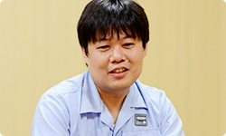 ※1 はてな＝株式会社はてな。「はてなブックマーク」「はてなダイアリー（はてなブログ）」をはじめとする、「はてな」の各サービスを開発し、インターネット上で運営を行う。設立は２００１年。本社は京都市。 加藤 ネットワーク事業部の加藤です。 『Miiverse』とWii U上で動くゲームが やりとりするためのライブラリーを、 電遊社（※2）さんという会社といっしょに開発しました。 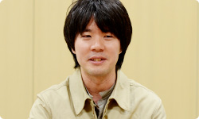 ※2 電遊社＝京都のゲーム開発会社。携帯ゲーム機「ポケモンミニ」のソフト開発や、「ニンテンドーゾーン」や『出前チャンネル』の開発協力、さらにニンテンドー3DSでは『いつの間に交換日記』のほか、「ゲームメモ」の開発を行ってきた。２００２年設立。 栗栖 こんにちは。はてなの栗栖と申します。 はてな側で『Miiverse』のディレクションを担当しました。 よろしくお願いします。 岩田 よろしくお願いします。 元山 こんにちは。はてなの元山です。 『Miiverse』のＵＩ（※3）のデザインを主に担当しました。 よろしくお願いします。 ※3 ＵＩ＝ユーザー・インターフェイスの略称。コンピューターを操作するときの画面表示、ウィンドウ、メニューなどの表現や操作感を指す。 岩田 よろしくお願いします。 今日は『Miiverse』をつくっていく過程のなかで 見えてきた手ごたえについて、 お話をお訊きしたいと思っています。 最初に『Miiverse』の第一印象を訊かせてもらえますか？ 湯澤 はい。わたしは任天堂に入社する前、 前職ではウェブサービスを 数多く立ち上げてきたという経験もありましたので、 『Miiverse』のことを聞いたときは、 「ぜひ、わたしにやらせてください」 と手を挙げて、担当になりました。 岩田 第一印象から、「自分の領域の話がきた・・・！」 という感じだったんですね（笑）。 加藤さんは、どうでしたか？ 加藤 最初に『Miiverse』のことを聞いたのは スタッフとしてではなく、水木（潔）さん（※4）から 「共感ネットワークをやります」という、 急な案内があったときでした。 なので、まだ誰が担当するのかも決まってなくて、 「場は騒然」といった感じで（笑）。 でも、わたしはそれを聞いて、 すごく魅力的に思ったんです。 ※4 水木潔＝ネットワーク事業部所属。『Miiverse』のプロデューサー。 社長が訊く『ニンテンドー3DS』内蔵ソフト篇に登場。 岩田 最初、どんなところに魅力を感じましたか？ 加藤 これまで『うごくメモ帳』（※5）や、 『Miiコンテストチャンネル』（※6）など、 お客さんが投稿するサービスはありましたけど、 『Miiverse』は本体にはじめから内蔵された 新しいネットワークサービスなので、 とても魅力を感じました。 「すごくやりたい！」と思っていたところ、 声をかけてもらいました。 ※5 『うごくメモ帳』＝ニンテンドーDSi、DSiLLに内蔵されたタッチペンで手書きメモを作成できるソフト。何枚も書いたメモを再生して、パラパラマンガ（動画）をつくることもできる。また、インターネットに接続すれば、『うごくメモ帳』でつくった自分の「うごメモ」を公開したり、公開されているほかの人の「うごメモ」を見ることができる。 ※6 『Miiコンテストチャンネル』＝Wiiチャンネルのひとつ。自分がつくったMiiを投稿してほかの人に見てもらったり、ほかの人がつくったMiiをもらったりすることができる。また、「コンテスト」のテーマに沿ってMiiをつくって応募したり、ほかの人が応募したMiiを審査したりできる。 岩田 きっと「担当させてくれオーラ」が 出ていたんでしょうね（笑）。 栗栖さんはどうでしたか？ 栗栖 はい。わたしは近藤（淳也）さん（※7）から 『Miiverse』の話を聞きました。 ゲームとつながってスクリーンショットや メッセージを投稿したりするコミュニティサービスと聞いて、 「ぜひやってみたい」と思いました。 それに、わたしは以前「うごメモはてな」（※8）の エンジニアリングディレクターとして、 世界版「Flipnote Hatena」のリリースを担当していたんですが、 その直後に別の仕事に移ってしまって、世界中のユーザーが 「うごメモ」を投稿する様子を見られなかったんです。 でも今回は、海外からサービスがスタートする（※9）ので、 「それも楽しみな要素のひとつだな」と思いました。 ※7 近藤淳也さん＝株式会社はてな代表取締役社長。 社長が訊く『ニンテンドーDSi』うごくメモ帳篇に登場。 ※8 「うごメモはてな」＝『うごくメモ帳』で書かれた作品を、パソコンやニンテンドーDSiブラウザーなどから楽しめるウェブサイト。 ※9 海外からサービスがスタートする＝Wii Uの発売日は、アメリカでは２０１２年１１月１８日、ヨーロッパでは２０１２年１１月３０日予定。日本では２０１２年１２月８日発売予定。 岩田 元山さんはどうですか？ 元山 僕はそれまで「はてなブックマーク」（※10）の パソコンや、iPhoneなどのスマートフォンデバイスに向けた サービスのデザインを担当していたので、 正直、最初に話があったときは、 未経験のゲーム機のデザインになるので、 「僕で大丈夫だろうか・・・」と迷ったんです。 でも、これから自分が仕事をしていくなかで、 「新しい経験として価値がある」と思って、 参加させてもらいました。 ※10 「はてなブックマーク」＝気に入ったウェブページをインターネット上で管理できるサービス。ほかの人が気に入ったページも知ることができ、ウェブで情報を探すサービスとして使われている。 岩田 少なくともみなさん、第一印象では 「面白そう」と思っていただけたようですが、 「未発売のプラットフォームの基幹サービスを いっしょにつくる」というはじめての体験なので、 「どう考えかたをそろえるか？」ということが 最初の課題だったんじゃないかと思います。 湯澤さんと栗栖さんの間で、 どんなやりとりがあったんですか？ 湯澤 一般のウェブサイトを開発する場合、 ブラウザーはすでにあるものという前提で 開発することが多いですよね。 でも今回はブラウザー自身も開発中だったので、 とりあえず「何ができるか」は置いておいて、 「どういう機能をお客さんに提供したいか」について ディスカッションするところからはじめました。 岩田 それはどんなふうに行われたんですか？ 栗栖 ベースとなる案を 湯澤さんや水木さんに考えてもらって、 定例会でじっくり話を詰めたり、 グループウェア（※11）でやりとりをしながら 決めていきました。 ※11 グループウェア＝組織内などでコンピューターネットワークを活用した情報共有のためのソフトウェア。 岩田 はてなさんと任天堂は、 物理的に会社の距離が近かったことも メリットでしたよね。 同じ京都市内なので ２０分あれば、双方に会いにいけますから。 湯澤 はい。近さは積極的に活用しました。 あと、Wii U GamePadができていないころは、 手で持ったときの感触を確かめるため、 元山さんにダミーのモックアップ（模型）をつくってもらって 検討したりもしました。 元山 あの・・・今日、それを持ってきました。 粗末なもので、大変申し訳ないんですけど・・・。 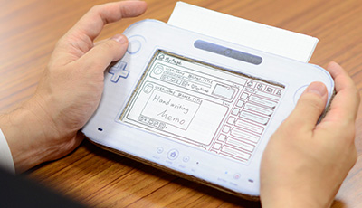 岩田 あ、ダンボール製ですか（笑）。 元山 はい。画面部分のフタが開いて、 上部分に紙を差し込んで、画面を変えられます。 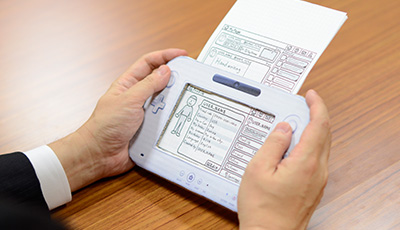 岩田 紙を差し込めるっていうのが、 たまらないですね（笑）。 一同 （笑）
ZombiU（ゾンビU） 篇 Nintendo×JOYSOUND Wii カラオケ U 篇 Nintendo Land 篇 Nintendo TVii 篇 Wii Street U powered by Google 篇 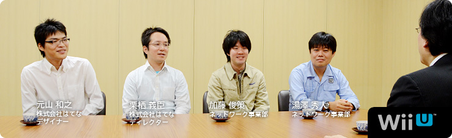 本文の一部を引用される場合は、必ず、本ページのURLを明記、または本ページへのリンクをしていただくようお願いいたします。 1. “ゲーム機ならではのブラウザー” 2. 「Miiがいるだけで」 3. “共感” 4. “クラウド型ゲーム日記” 岩田 Miiverse プロデュース篇につづいて 第２部をはじめます。 よろしくお願いします。 一同 よろしくお願いします。 岩田 では最初に自己紹介と、 『Miiverse』をつくるうえで何を担当したか、 湯澤さんからお願いします。 湯澤 はい。ネットワーク事業部の湯澤です。 主に、『Miiverse』全体の仕様検討、 サーバー関係のシステム設計と、 はてな（※1）さんとの調整役を担当しました。 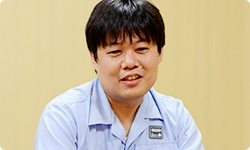 ※1 はてな＝株式会社はてな。「はてなブックマーク」「はてなダイアリー（はてなブログ）」をはじめとする、「はてな」の各サービスを開発し、インターネット上で運営を行う。設立は２００１年。本社は京都市。 加藤 ネットワーク事業部の加藤です。 『Miiverse』とWii U上で動くゲームが やりとりするためのライブラリーを、 電遊社（※2）さんという会社といっしょに開発しました。 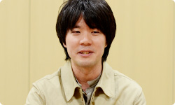 ※2 電遊社＝京都のゲーム開発会社。携帯ゲーム機「ポケモンミニ」のソフト開発や、「ニンテンドーゾーン」や『出前チャンネル』の開発協力、さらにニンテンドー3DSでは『いつの間に交換日記』のほか、「ゲームメモ」の開発を行ってきた。２００２年設立。 栗栖 こんにちは。はてなの栗栖と申します。 はてな側で『Miiverse』のディレクションを担当しました。 よろしくお願いします。 岩田 よろしくお願いします。 元山 こんにちは。はてなの元山です。 『Miiverse』のＵＩ（※3）のデザインを主に担当しました。 よろしくお願いします。 ※3 ＵＩ＝ユーザー・インターフェイスの略称。コンピューターを操作するときの画面表示、ウィンドウ、メニューなどの表現や操作感を指す。 岩田 よろしくお願いします。 今日は『Miiverse』をつくっていく過程のなかで 見えてきた手ごたえについて、 お話をお訊きしたいと思っています。 最初に『Miiverse』の第一印象を訊かせてもらえますか？ 湯澤 はい。わたしは任天堂に入社する前、 前職ではウェブサービスを 数多く立ち上げてきたという経験もありましたので、 『Miiverse』のことを聞いたときは、 「ぜひ、わたしにやらせてください」 と手を挙げて、担当になりました。 岩田 第一印象から、「自分の領域の話がきた・・・！」 という感じだったんですね（笑）。 加藤さんは、どうでしたか？ 加藤 最初に『Miiverse』のことを聞いたのは スタッフとしてではなく、水木（潔）さん（※4）から 「共感ネットワークをやります」という、 急な案内があったときでした。 なので、まだ誰が担当するのかも決まってなくて、 「場は騒然」といった感じで（笑）。 でも、わたしはそれを聞いて、 すごく魅力的に思ったんです。 ※4 水木潔＝ネットワーク事業部所属。『Miiverse』のプロデューサー。 社長が訊く『ニンテンドー3DS』内蔵ソフト篇に登場。 岩田 最初、どんなところに魅力を感じましたか？ 加藤 これまで『うごくメモ帳』（※5）や、 『Miiコンテストチャンネル』（※6）など、 お客さんが投稿するサービスはありましたけど、 『Miiverse』は本体にはじめから内蔵された 新しいネットワークサービスなので、 とても魅力を感じました。 「すごくやりたい！」と思っていたところ、 声をかけてもらいました。 ※5 『うごくメモ帳』＝ニンテンドーDSi、DSiLLに内蔵されたタッチペンで手書きメモを作成できるソフト。何枚も書いたメモを再生して、パラパラマンガ（動画）をつくることもできる。また、インターネットに接続すれば、『うごくメモ帳』でつくった自分の「うごメモ」を公開したり、公開されているほかの人の「うごメモ」を見ることができる。 ※6 『Miiコンテストチャンネル』＝Wiiチャンネルのひとつ。自分がつくったMiiを投稿してほかの人に見てもらったり、ほかの人がつくったMiiをもらったりすることができる。また、「コンテスト」のテーマに沿ってMiiをつくって応募したり、ほかの人が応募したMiiを審査したりできる。 岩田 きっと「担当させてくれオーラ」が 出ていたんでしょうね（笑）。 栗栖さんはどうでしたか？ 栗栖 はい。わたしは近藤（淳也）さん（※7）から 『Miiverse』の話を聞きました。 ゲームとつながってスクリーンショットや メッセージを投稿したりするコミュニティサービスと聞いて、 「ぜひやってみたい」と思いました。 それに、わたしは以前「うごメモはてな」（※8）の エンジニアリングディレクターとして、 世界版「Flipnote Hatena」のリリースを担当していたんですが、 その直後に別の仕事に移ってしまって、世界中のユーザーが 「うごメモ」を投稿する様子を見られなかったんです。 でも今回は、海外からサービスがスタートする（※9）ので、 「それも楽しみな要素のひとつだな」と思いました。 ※7 近藤淳也さん＝株式会社はてな代表取締役社長。 社長が訊く『ニンテンドーDSi』うごくメモ帳篇に登場。 ※8 「うごメモはてな」＝『うごくメモ帳』で書かれた作品を、パソコンやニンテンドーDSiブラウザーなどから楽しめるウェブサイト。 ※9 海外からサービスがスタートする＝Wii Uの発売日は、アメリカでは２０１２年１１月１８日、ヨーロッパでは２０１２年１１月３０日予定。日本では２０１２年１２月８日発売予定。 岩田 元山さんはどうですか？ 元山 僕はそれまで「はてなブックマーク」（※10）の パソコンや、iPhoneなどのスマートフォンデバイスに向けた サービスのデザインを担当していたので、 正直、最初に話があったときは、 未経験のゲーム機のデザインになるので、 「僕で大丈夫だろうか・・・」と迷ったんです。 でも、これから自分が仕事をしていくなかで、 「新しい経験として価値がある」と思って、 参加させてもらいました。 ※10 「はてなブックマーク」＝気に入ったウェブページをインターネット上で管理できるサービス。ほかの人が気に入ったページも知ることができ、ウェブで情報を探すサービスとして使われている。 岩田 少なくともみなさん、第一印象では 「面白そう」と思っていただけたようですが、 「未発売のプラットフォームの基幹サービスを いっしょにつくる」というはじめての体験なので、 「どう考えかたをそろえるか？」ということが 最初の課題だったんじゃないかと思います。 湯澤さんと栗栖さんの間で、 どんなやりとりがあったんですか？ 湯澤 一般のウェブサイトを開発する場合、 ブラウザーはすでにあるものという前提で 開発することが多いですよね。 でも今回はブラウザー自身も開発中だったので、 とりあえず「何ができるか」は置いておいて、 「どういう機能をお客さんに提供したいか」について ディスカッションするところからはじめました。 岩田 それはどんなふうに行われたんですか？ 栗栖 ベースとなる案を 湯澤さんや水木さんに考えてもらって、 定例会でじっくり話を詰めたり、 グループウェア（※11）でやりとりをしながら 決めていきました。 ※11 グループウェア＝組織内などでコンピューターネットワークを活用した情報共有のためのソフトウェア。 岩田 はてなさんと任天堂は、 物理的に会社の距離が近かったことも メリットでしたよね。 同じ京都市内なので ２０分あれば、双方に会いにいけますから。 湯澤 はい。近さは積極的に活用しました。 あと、Wii U GamePadができていないころは、 手で持ったときの感触を確かめるため、 元山さんにダミーのモックアップ（模型）をつくってもらって 検討したりもしました。 元山 あの・・・今日、それを持ってきました。 粗末なもので、大変申し訳ないんですけど・・・。 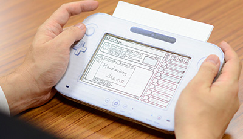 岩田 あ、ダンボール製ですか（笑）。 元山 はい。画面部分のフタが開いて、 上部分に紙を差し込んで、画面を変えられます。 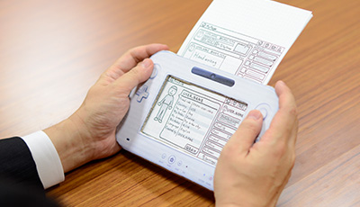 岩田 紙を差し込めるっていうのが、 たまらないですね（笑）。 一同 （笑）
Nintendo×JOYSOUND Wii カラオケ U 篇 Nintendo Land 篇 Nintendo TVii 篇 Wii Street U powered by Google 篇 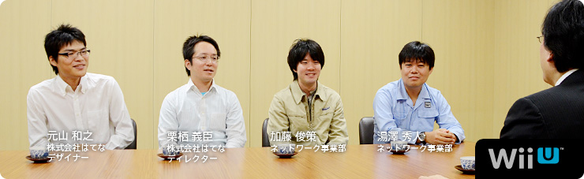 本文の一部を引用される場合は、必ず、本ページのURLを明記、または本ページへのリンクをしていただくようお願いいたします。 1. “ゲーム機ならではのブラウザー” 2. 「Miiがいるだけで」 3. “共感” 4. “クラウド型ゲーム日記” 岩田 Miiverse プロデュース篇につづいて 第２部をはじめます。 よろしくお願いします。 一同 よろしくお願いします。 岩田 では最初に自己紹介と、 『Miiverse』をつくるうえで何を担当したか、 湯澤さんからお願いします。 湯澤 はい。ネットワーク事業部の湯澤です。 主に、『Miiverse』全体の仕様検討、 サーバー関係のシステム設計と、 はてな（※1）さんとの調整役を担当しました。 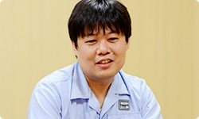 ※1 はてな＝株式会社はてな。「はてなブックマーク」「はてなダイアリー（はてなブログ）」をはじめとする、「はてな」の各サービスを開発し、インターネット上で運営を行う。設立は２００１年。本社は京都市。 加藤 ネットワーク事業部の加藤です。 『Miiverse』とWii U上で動くゲームが やりとりするためのライブラリーを、 電遊社（※2）さんという会社といっしょに開発しました。 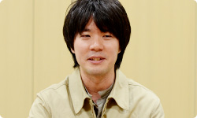 ※2 電遊社＝京都のゲーム開発会社。携帯ゲーム機「ポケモンミニ」のソフト開発や、「ニンテンドーゾーン」や『出前チャンネル』の開発協力、さらにニンテンドー3DSでは『いつの間に交換日記』のほか、「ゲームメモ」の開発を行ってきた。２００２年設立。 栗栖 こんにちは。はてなの栗栖と申します。 はてな側で『Miiverse』のディレクションを担当しました。 よろしくお願いします。 岩田 よろしくお願いします。 元山 こんにちは。はてなの元山です。 『Miiverse』のＵＩ（※3）のデザインを主に担当しました。 よろしくお願いします。 ※3 ＵＩ＝ユーザー・インターフェイスの略称。コンピューターを操作するときの画面表示、ウィンドウ、メニューなどの表現や操作感を指す。 岩田 よろしくお願いします。 今日は『Miiverse』をつくっていく過程のなかで 見えてきた手ごたえについて、 お話をお訊きしたいと思っています。 最初に『Miiverse』の第一印象を訊かせてもらえますか？ 湯澤 はい。わたしは任天堂に入社する前、 前職ではウェブサービスを 数多く立ち上げてきたという経験もありましたので、 『Miiverse』のことを聞いたときは、 「ぜひ、わたしにやらせてください」 と手を挙げて、担当になりました。 岩田 第一印象から、「自分の領域の話がきた・・・！」 という感じだったんですね（笑）。 加藤さんは、どうでしたか？ 加藤 最初に『Miiverse』のことを聞いたのは スタッフとしてではなく、水木（潔）さん（※4）から 「共感ネットワークをやります」という、 急な案内があったときでした。 なので、まだ誰が担当するのかも決まってなくて、 「場は騒然」といった感じで（笑）。 でも、わたしはそれを聞いて、 すごく魅力的に思ったんです。 ※4 水木潔＝ネットワーク事業部所属。『Miiverse』のプロデューサー。 社長が訊く『ニンテンドー3DS』内蔵ソフト篇に登場。 岩田 最初、どんなところに魅力を感じましたか？ 加藤 これまで『うごくメモ帳』（※5）や、 『Miiコンテストチャンネル』（※6）など、 お客さんが投稿するサービスはありましたけど、 『Miiverse』は本体にはじめから内蔵された 新しいネットワークサービスなので、 とても魅力を感じました。 「すごくやりたい！」と思っていたところ、 声をかけてもらいました。 ※5 『うごくメモ帳』＝ニンテンドーDSi、DSiLLに内蔵されたタッチペンで手書きメモを作成できるソフト。何枚も書いたメモを再生して、パラパラマンガ（動画）をつくることもできる。また、インターネットに接続すれば、『うごくメモ帳』でつくった自分の「うごメモ」を公開したり、公開されているほかの人の「うごメモ」を見ることができる。 ※6 『Miiコンテストチャンネル』＝Wiiチャンネルのひとつ。自分がつくったMiiを投稿してほかの人に見てもらったり、ほかの人がつくったMiiをもらったりすることができる。また、「コンテスト」のテーマに沿ってMiiをつくって応募したり、ほかの人が応募したMiiを審査したりできる。 岩田 きっと「担当させてくれオーラ」が 出ていたんでしょうね（笑）。 栗栖さんはどうでしたか？ 栗栖 はい。わたしは近藤（淳也）さん（※7）から 『Miiverse』の話を聞きました。 ゲームとつながってスクリーンショットや メッセージを投稿したりするコミュニティサービスと聞いて、 「ぜひやってみたい」と思いました。 それに、わたしは以前「うごメモはてな」（※8）の エンジニアリングディレクターとして、 世界版「Flipnote Hatena」のリリースを担当していたんですが、 その直後に別の仕事に移ってしまって、世界中のユーザーが 「うごメモ」を投稿する様子を見られなかったんです。 でも今回は、海外からサービスがスタートする（※9）ので、 「それも楽しみな要素のひとつだな」と思いました。 ※7 近藤淳也さん＝株式会社はてな代表取締役社長。 社長が訊く『ニンテンドーDSi』うごくメモ帳篇に登場。 ※8 「うごメモはてな」＝『うごくメモ帳』で書かれた作品を、パソコンやニンテンドーDSiブラウザーなどから楽しめるウェブサイト。 ※9 海外からサービスがスタートする＝Wii Uの発売日は、アメリカでは２０１２年１１月１８日、ヨーロッパでは２０１２年１１月３０日予定。日本では２０１２年１２月８日発売予定。 岩田 元山さんはどうですか？ 元山 僕はそれまで「はてなブックマーク」（※10）の パソコンや、iPhoneなどのスマートフォンデバイスに向けた サービスのデザインを担当していたので、 正直、最初に話があったときは、 未経験のゲーム機のデザインになるので、 「僕で大丈夫だろうか・・・」と迷ったんです。 でも、これから自分が仕事をしていくなかで、 「新しい経験として価値がある」と思って、 参加させてもらいました。 ※10 「はてなブックマーク」＝気に入ったウェブページをインターネット上で管理できるサービス。ほかの人が気に入ったページも知ることができ、ウェブで情報を探すサービスとして使われている。 岩田 少なくともみなさん、第一印象では 「面白そう」と思っていただけたようですが、 「未発売のプラットフォームの基幹サービスを いっしょにつくる」というはじめての体験なので、 「どう考えかたをそろえるか？」ということが 最初の課題だったんじゃないかと思います。 湯澤さんと栗栖さんの間で、 どんなやりとりがあったんですか？ 湯澤 一般のウェブサイトを開発する場合、 ブラウザーはすでにあるものという前提で 開発することが多いですよね。 でも今回はブラウザー自身も開発中だったので、 とりあえず「何ができるか」は置いておいて、 「どういう機能をお客さんに提供したいか」について ディスカッションするところからはじめました。 岩田 それはどんなふうに行われたんですか？ 栗栖 ベースとなる案を 湯澤さんや水木さんに考えてもらって、 定例会でじっくり話を詰めたり、 グループウェア（※11）でやりとりをしながら 決めていきました。 ※11 グループウェア＝組織内などでコンピューターネットワークを活用した情報共有のためのソフトウェア。 岩田 はてなさんと任天堂は、 物理的に会社の距離が近かったことも メリットでしたよね。 同じ京都市内なので ２０分あれば、双方に会いにいけますから。 湯澤 はい。近さは積極的に活用しました。 あと、Wii U GamePadができていないころは、 手で持ったときの感触を確かめるため、 元山さんにダミーのモックアップ（模型）をつくってもらって 検討したりもしました。 元山 あの・・・今日、それを持ってきました。 粗末なもので、大変申し訳ないんですけど・・・。 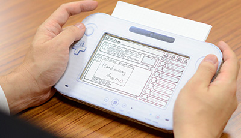 岩田 あ、ダンボール製ですか（笑）。 元山 はい。画面部分のフタが開いて、 上部分に紙を差し込んで、画面を変えられます。 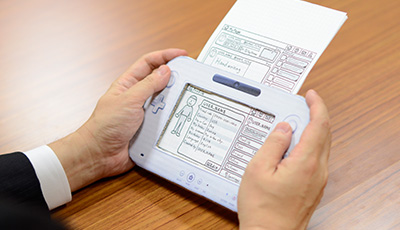 岩田 紙を差し込めるっていうのが、 たまらないですね（笑）。 一同 （笑）
Nintendo Land 篇 Nintendo TVii 篇 Wii Street U powered by Google 篇 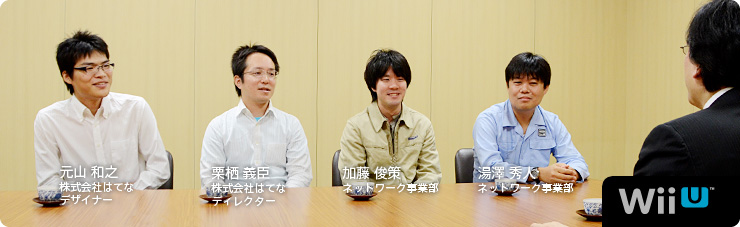 本文の一部を引用される場合は、必ず、本ページのURLを明記、または本ページへのリンクをしていただくようお願いいたします。 1. “ゲーム機ならではのブラウザー” 2. 「Miiがいるだけで」 3. “共感” 4. “クラウド型ゲーム日記” 岩田 Miiverse プロデュース篇につづいて 第２部をはじめます。 よろしくお願いします。 一同 よろしくお願いします。 岩田 では最初に自己紹介と、 『Miiverse』をつくるうえで何を担当したか、 湯澤さんからお願いします。 湯澤 はい。ネットワーク事業部の湯澤です。 主に、『Miiverse』全体の仕様検討、 サーバー関係のシステム設計と、 はてな（※1）さんとの調整役を担当しました。 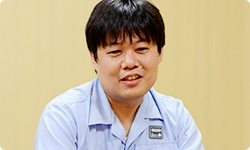 ※1 はてな＝株式会社はてな。「はてなブックマーク」「はてなダイアリー（はてなブログ）」をはじめとする、「はてな」の各サービスを開発し、インターネット上で運営を行う。設立は２００１年。本社は京都市。 加藤 ネットワーク事業部の加藤です。 『Miiverse』とWii U上で動くゲームが やりとりするためのライブラリーを、 電遊社（※2）さんという会社といっしょに開発しました。 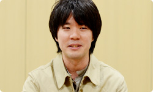 ※2 電遊社＝京都のゲーム開発会社。携帯ゲーム機「ポケモンミニ」のソフト開発や、「ニンテンドーゾーン」や『出前チャンネル』の開発協力、さらにニンテンドー3DSでは『いつの間に交換日記』のほか、「ゲームメモ」の開発を行ってきた。２００２年設立。 栗栖 こんにちは。はてなの栗栖と申します。 はてな側で『Miiverse』のディレクションを担当しました。 よろしくお願いします。 岩田 よろしくお願いします。 元山 こんにちは。はてなの元山です。 『Miiverse』のＵＩ（※3）のデザインを主に担当しました。 よろしくお願いします。 ※3 ＵＩ＝ユーザー・インターフェイスの略称。コンピューターを操作するときの画面表示、ウィンドウ、メニューなどの表現や操作感を指す。 岩田 よろしくお願いします。 今日は『Miiverse』をつくっていく過程のなかで 見えてきた手ごたえについて、 お話をお訊きしたいと思っています。 最初に『Miiverse』の第一印象を訊かせてもらえますか？ 湯澤 はい。わたしは任天堂に入社する前、 前職ではウェブサービスを 数多く立ち上げてきたという経験もありましたので、 『Miiverse』のことを聞いたときは、 「ぜひ、わたしにやらせてください」 と手を挙げて、担当になりました。 岩田 第一印象から、「自分の領域の話がきた・・・！」 という感じだったんですね（笑）。 加藤さんは、どうでしたか？ 加藤 最初に『Miiverse』のことを聞いたのは スタッフとしてではなく、水木（潔）さん（※4）から 「共感ネットワークをやります」という、 急な案内があったときでした。 なので、まだ誰が担当するのかも決まってなくて、 「場は騒然」といった感じで（笑）。 でも、わたしはそれを聞いて、 すごく魅力的に思ったんです。 ※4 水木潔＝ネットワーク事業部所属。『Miiverse』のプロデューサー。 社長が訊く『ニンテンドー3DS』内蔵ソフト篇に登場。 岩田 最初、どんなところに魅力を感じましたか？ 加藤 これまで『うごくメモ帳』（※5）や、 『Miiコンテストチャンネル』（※6）など、 お客さんが投稿するサービスはありましたけど、 『Miiverse』は本体にはじめから内蔵された 新しいネットワークサービスなので、 とても魅力を感じました。 「すごくやりたい！」と思っていたところ、 声をかけてもらいました。 ※5 『うごくメモ帳』＝ニンテンドーDSi、DSiLLに内蔵されたタッチペンで手書きメモを作成できるソフト。何枚も書いたメモを再生して、パラパラマンガ（動画）をつくることもできる。また、インターネットに接続すれば、『うごくメモ帳』でつくった自分の「うごメモ」を公開したり、公開されているほかの人の「うごメモ」を見ることができる。 ※6 『Miiコンテストチャンネル』＝Wiiチャンネルのひとつ。自分がつくったMiiを投稿してほかの人に見てもらったり、ほかの人がつくったMiiをもらったりすることができる。また、「コンテスト」のテーマに沿ってMiiをつくって応募したり、ほかの人が応募したMiiを審査したりできる。 岩田 きっと「担当させてくれオーラ」が 出ていたんでしょうね（笑）。 栗栖さんはどうでしたか？ 栗栖 はい。わたしは近藤（淳也）さん（※7）から 『Miiverse』の話を聞きました。 ゲームとつながってスクリーンショットや メッセージを投稿したりするコミュニティサービスと聞いて、 「ぜひやってみたい」と思いました。 それに、わたしは以前「うごメモはてな」（※8）の エンジニアリングディレクターとして、 世界版「Flipnote Hatena」のリリースを担当していたんですが、 その直後に別の仕事に移ってしまって、世界中のユーザーが 「うごメモ」を投稿する様子を見られなかったんです。 でも今回は、海外からサービスがスタートする（※9）ので、 「それも楽しみな要素のひとつだな」と思いました。 ※7 近藤淳也さん＝株式会社はてな代表取締役社長。 社長が訊く『ニンテンドーDSi』うごくメモ帳篇に登場。 ※8 「うごメモはてな」＝『うごくメモ帳』で書かれた作品を、パソコンやニンテンドーDSiブラウザーなどから楽しめるウェブサイト。 ※9 海外からサービスがスタートする＝Wii Uの発売日は、アメリカでは２０１２年１１月１８日、ヨーロッパでは２０１２年１１月３０日予定。日本では２０１２年１２月８日発売予定。 岩田 元山さんはどうですか？ 元山 僕はそれまで「はてなブックマーク」（※10）の パソコンや、iPhoneなどのスマートフォンデバイスに向けた サービスのデザインを担当していたので、 正直、最初に話があったときは、 未経験のゲーム機のデザインになるので、 「僕で大丈夫だろうか・・・」と迷ったんです。 でも、これから自分が仕事をしていくなかで、 「新しい経験として価値がある」と思って、 参加させてもらいました。 ※10 「はてなブックマーク」＝気に入ったウェブページをインターネット上で管理できるサービス。ほかの人が気に入ったページも知ることができ、ウェブで情報を探すサービスとして使われている。 岩田 少なくともみなさん、第一印象では 「面白そう」と思っていただけたようですが、 「未発売のプラットフォームの基幹サービスを いっしょにつくる」というはじめての体験なので、 「どう考えかたをそろえるか？」ということが 最初の課題だったんじゃないかと思います。 湯澤さんと栗栖さんの間で、 どんなやりとりがあったんですか？ 湯澤 一般のウェブサイトを開発する場合、 ブラウザーはすでにあるものという前提で 開発することが多いですよね。 でも今回はブラウザー自身も開発中だったので、 とりあえず「何ができるか」は置いておいて、 「どういう機能をお客さんに提供したいか」について ディスカッションするところからはじめました。 岩田 それはどんなふうに行われたんですか？ 栗栖 ベースとなる案を 湯澤さんや水木さんに考えてもらって、 定例会でじっくり話を詰めたり、 グループウェア（※11）でやりとりをしながら 決めていきました。 ※11 グループウェア＝組織内などでコンピューターネットワークを活用した情報共有のためのソフトウェア。 岩田 はてなさんと任天堂は、 物理的に会社の距離が近かったことも メリットでしたよね。 同じ京都市内なので ２０分あれば、双方に会いにいけますから。 湯澤 はい。近さは積極的に活用しました。 あと、Wii U GamePadができていないころは、 手で持ったときの感触を確かめるため、 元山さんにダミーのモックアップ（模型）をつくってもらって 検討したりもしました。 元山 あの・・・今日、それを持ってきました。 粗末なもので、大変申し訳ないんですけど・・・。 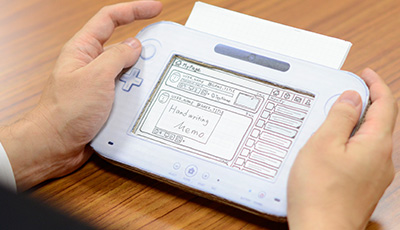 岩田 あ、ダンボール製ですか（笑）。 元山 はい。画面部分のフタが開いて、 上部分に紙を差し込んで、画面を変えられます。 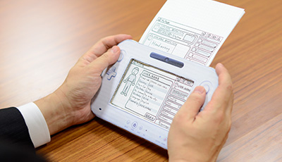 岩田 紙を差し込めるっていうのが、 たまらないですね（笑）。 一同 （笑）
Nintendo TVii 篇 Wii Street U powered by Google 篇 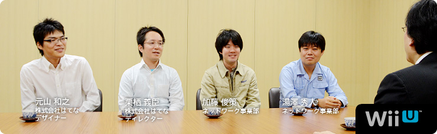 本文の一部を引用される場合は、必ず、本ページのURLを明記、または本ページへのリンクをしていただくようお願いいたします。 1. “ゲーム機ならではのブラウザー” 2. 「Miiがいるだけで」 3. “共感” 4. “クラウド型ゲーム日記” 岩田 Miiverse プロデュース篇につづいて 第２部をはじめます。 よろしくお願いします。 一同 よろしくお願いします。 岩田 では最初に自己紹介と、 『Miiverse』をつくるうえで何を担当したか、 湯澤さんからお願いします。 湯澤 はい。ネットワーク事業部の湯澤です。 主に、『Miiverse』全体の仕様検討、 サーバー関係のシステム設計と、 はてな（※1）さんとの調整役を担当しました。 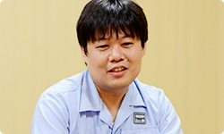 ※1 はてな＝株式会社はてな。「はてなブックマーク」「はてなダイアリー（はてなブログ）」をはじめとする、「はてな」の各サービスを開発し、インターネット上で運営を行う。設立は２００１年。本社は京都市。 加藤 ネットワーク事業部の加藤です。 『Miiverse』とWii U上で動くゲームが やりとりするためのライブラリーを、 電遊社（※2）さんという会社といっしょに開発しました。 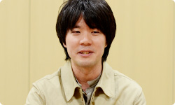 ※2 電遊社＝京都のゲーム開発会社。携帯ゲーム機「ポケモンミニ」のソフト開発や、「ニンテンドーゾーン」や『出前チャンネル』の開発協力、さらにニンテンドー3DSでは『いつの間に交換日記』のほか、「ゲームメモ」の開発を行ってきた。２００２年設立。 栗栖 こんにちは。はてなの栗栖と申します。 はてな側で『Miiverse』のディレクションを担当しました。 よろしくお願いします。 岩田 よろしくお願いします。 元山 こんにちは。はてなの元山です。 『Miiverse』のＵＩ（※3）のデザインを主に担当しました。 よろしくお願いします。 ※3 ＵＩ＝ユーザー・インターフェイスの略称。コンピューターを操作するときの画面表示、ウィンドウ、メニューなどの表現や操作感を指す。 岩田 よろしくお願いします。 今日は『Miiverse』をつくっていく過程のなかで 見えてきた手ごたえについて、 お話をお訊きしたいと思っています。 最初に『Miiverse』の第一印象を訊かせてもらえますか？ 湯澤 はい。わたしは任天堂に入社する前、 前職ではウェブサービスを 数多く立ち上げてきたという経験もありましたので、 『Miiverse』のことを聞いたときは、 「ぜひ、わたしにやらせてください」 と手を挙げて、担当になりました。 岩田 第一印象から、「自分の領域の話がきた・・・！」 という感じだったんですね（笑）。 加藤さんは、どうでしたか？ 加藤 最初に『Miiverse』のことを聞いたのは スタッフとしてではなく、水木（潔）さん（※4）から 「共感ネットワークをやります」という、 急な案内があったときでした。 なので、まだ誰が担当するのかも決まってなくて、 「場は騒然」といった感じで（笑）。 でも、わたしはそれを聞いて、 すごく魅力的に思ったんです。 ※4 水木潔＝ネットワーク事業部所属。『Miiverse』のプロデューサー。 社長が訊く『ニンテンドー3DS』内蔵ソフト篇に登場。 岩田 最初、どんなところに魅力を感じましたか？ 加藤 これまで『うごくメモ帳』（※5）や、 『Miiコンテストチャンネル』（※6）など、 お客さんが投稿するサービスはありましたけど、 『Miiverse』は本体にはじめから内蔵された 新しいネットワークサービスなので、 とても魅力を感じました。 「すごくやりたい！」と思っていたところ、 声をかけてもらいました。 ※5 『うごくメモ帳』＝ニンテンドーDSi、DSiLLに内蔵されたタッチペンで手書きメモを作成できるソフト。何枚も書いたメモを再生して、パラパラマンガ（動画）をつくることもできる。また、インターネットに接続すれば、『うごくメモ帳』でつくった自分の「うごメモ」を公開したり、公開されているほかの人の「うごメモ」を見ることができる。 ※6 『Miiコンテストチャンネル』＝Wiiチャンネルのひとつ。自分がつくったMiiを投稿してほかの人に見てもらったり、ほかの人がつくったMiiをもらったりすることができる。また、「コンテスト」のテーマに沿ってMiiをつくって応募したり、ほかの人が応募したMiiを審査したりできる。 岩田 きっと「担当させてくれオーラ」が 出ていたんでしょうね（笑）。 栗栖さんはどうでしたか？ 栗栖 はい。わたしは近藤（淳也）さん（※7）から 『Miiverse』の話を聞きました。 ゲームとつながってスクリーンショットや メッセージを投稿したりするコミュニティサービスと聞いて、 「ぜひやってみたい」と思いました。 それに、わたしは以前「うごメモはてな」（※8）の エンジニアリングディレクターとして、 世界版「Flipnote Hatena」のリリースを担当していたんですが、 その直後に別の仕事に移ってしまって、世界中のユーザーが 「うごメモ」を投稿する様子を見られなかったんです。 でも今回は、海外からサービスがスタートする（※9）ので、 「それも楽しみな要素のひとつだな」と思いました。 ※7 近藤淳也さん＝株式会社はてな代表取締役社長。 社長が訊く『ニンテンドーDSi』うごくメモ帳篇に登場。 ※8 「うごメモはてな」＝『うごくメモ帳』で書かれた作品を、パソコンやニンテンドーDSiブラウザーなどから楽しめるウェブサイト。 ※9 海外からサービスがスタートする＝Wii Uの発売日は、アメリカでは２０１２年１１月１８日、ヨーロッパでは２０１２年１１月３０日予定。日本では２０１２年１２月８日発売予定。 岩田 元山さんはどうですか？ 元山 僕はそれまで「はてなブックマーク」（※10）の パソコンや、iPhoneなどのスマートフォンデバイスに向けた サービスのデザインを担当していたので、 正直、最初に話があったときは、 未経験のゲーム機のデザインになるので、 「僕で大丈夫だろうか・・・」と迷ったんです。 でも、これから自分が仕事をしていくなかで、 「新しい経験として価値がある」と思って、 参加させてもらいました。 ※10 「はてなブックマーク」＝気に入ったウェブページをインターネット上で管理できるサービス。ほかの人が気に入ったページも知ることができ、ウェブで情報を探すサービスとして使われている。 岩田 少なくともみなさん、第一印象では 「面白そう」と思っていただけたようですが、 「未発売のプラットフォームの基幹サービスを いっしょにつくる」というはじめての体験なので、 「どう考えかたをそろえるか？」ということが 最初の課題だったんじゃないかと思います。 湯澤さんと栗栖さんの間で、 どんなやりとりがあったんですか？ 湯澤 一般のウェブサイトを開発する場合、 ブラウザーはすでにあるものという前提で 開発することが多いですよね。 でも今回はブラウザー自身も開発中だったので、 とりあえず「何ができるか」は置いておいて、 「どういう機能をお客さんに提供したいか」について ディスカッションするところからはじめました。 岩田 それはどんなふうに行われたんですか？ 栗栖 ベースとなる案を 湯澤さんや水木さんに考えてもらって、 定例会でじっくり話を詰めたり、 グループウェア（※11）でやりとりをしながら 決めていきました。 ※11 グループウェア＝組織内などでコンピューターネットワークを活用した情報共有のためのソフトウェア。 岩田 はてなさんと任天堂は、 物理的に会社の距離が近かったことも メリットでしたよね。 同じ京都市内なので ２０分あれば、双方に会いにいけますから。 湯澤 はい。近さは積極的に活用しました。 あと、Wii U GamePadができていないころは、 手で持ったときの感触を確かめるため、 元山さんにダミーのモックアップ（模型）をつくってもらって 検討したりもしました。 元山 あの・・・今日、それを持ってきました。 粗末なもので、大変申し訳ないんですけど・・・。 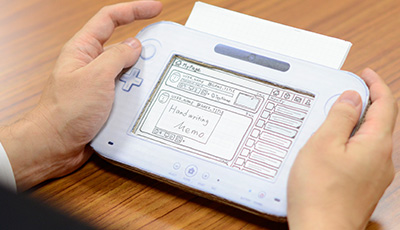 岩田 あ、ダンボール製ですか（笑）。 元山 はい。画面部分のフタが開いて、 上部分に紙を差し込んで、画面を変えられます。 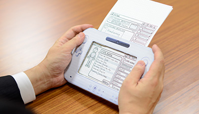 岩田 紙を差し込めるっていうのが、 たまらないですね（笑）。 一同 （笑）
Wii Street U powered by Google 篇 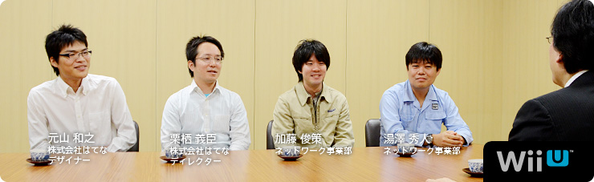 本文の一部を引用される場合は、必ず、本ページのURLを明記、または本ページへのリンクをしていただくようお願いいたします。 1. “ゲーム機ならではのブラウザー” 2. 「Miiがいるだけで」 3. “共感” 4. “クラウド型ゲーム日記” 岩田 Miiverse プロデュース篇につづいて 第２部をはじめます。 よろしくお願いします。 一同 よろしくお願いします。 岩田 では最初に自己紹介と、 『Miiverse』をつくるうえで何を担当したか、 湯澤さんからお願いします。 湯澤 はい。ネットワーク事業部の湯澤です。 主に、『Miiverse』全体の仕様検討、 サーバー関係のシステム設計と、 はてな（※1）さんとの調整役を担当しました。 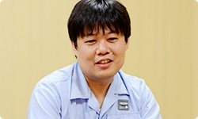 ※1 はてな＝株式会社はてな。「はてなブックマーク」「はてなダイアリー（はてなブログ）」をはじめとする、「はてな」の各サービスを開発し、インターネット上で運営を行う。設立は２００１年。本社は京都市。 加藤 ネットワーク事業部の加藤です。 『Miiverse』とWii U上で動くゲームが やりとりするためのライブラリーを、 電遊社（※2）さんという会社といっしょに開発しました。 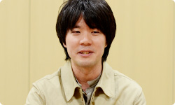 ※2 電遊社＝京都のゲーム開発会社。携帯ゲーム機「ポケモンミニ」のソフト開発や、「ニンテンドーゾーン」や『出前チャンネル』の開発協力、さらにニンテンドー3DSでは『いつの間に交換日記』のほか、「ゲームメモ」の開発を行ってきた。２００２年設立。 栗栖 こんにちは。はてなの栗栖と申します。 はてな側で『Miiverse』のディレクションを担当しました。 よろしくお願いします。 岩田 よろしくお願いします。 元山 こんにちは。はてなの元山です。 『Miiverse』のＵＩ（※3）のデザインを主に担当しました。 よろしくお願いします。 ※3 ＵＩ＝ユーザー・インターフェイスの略称。コンピューターを操作するときの画面表示、ウィンドウ、メニューなどの表現や操作感を指す。 岩田 よろしくお願いします。 今日は『Miiverse』をつくっていく過程のなかで 見えてきた手ごたえについて、 お話をお訊きしたいと思っています。 最初に『Miiverse』の第一印象を訊かせてもらえますか？ 湯澤 はい。わたしは任天堂に入社する前、 前職ではウェブサービスを 数多く立ち上げてきたという経験もありましたので、 『Miiverse』のことを聞いたときは、 「ぜひ、わたしにやらせてください」 と手を挙げて、担当になりました。 岩田 第一印象から、「自分の領域の話がきた・・・！」 という感じだったんですね（笑）。 加藤さんは、どうでしたか？ 加藤 最初に『Miiverse』のことを聞いたのは スタッフとしてではなく、水木（潔）さん（※4）から 「共感ネットワークをやります」という、 急な案内があったときでした。 なので、まだ誰が担当するのかも決まってなくて、 「場は騒然」といった感じで（笑）。 でも、わたしはそれを聞いて、 すごく魅力的に思ったんです。 ※4 水木潔＝ネットワーク事業部所属。『Miiverse』のプロデューサー。 社長が訊く『ニンテンドー3DS』内蔵ソフト篇に登場。 岩田 最初、どんなところに魅力を感じましたか？ 加藤 これまで『うごくメモ帳』（※5）や、 『Miiコンテストチャンネル』（※6）など、 お客さんが投稿するサービスはありましたけど、 『Miiverse』は本体にはじめから内蔵された 新しいネットワークサービスなので、 とても魅力を感じました。 「すごくやりたい！」と思っていたところ、 声をかけてもらいました。 ※5 『うごくメモ帳』＝ニンテンドーDSi、DSiLLに内蔵されたタッチペンで手書きメモを作成できるソフト。何枚も書いたメモを再生して、パラパラマンガ（動画）をつくることもできる。また、インターネットに接続すれば、『うごくメモ帳』でつくった自分の「うごメモ」を公開したり、公開されているほかの人の「うごメモ」を見ることができる。 ※6 『Miiコンテストチャンネル』＝Wiiチャンネルのひとつ。自分がつくったMiiを投稿してほかの人に見てもらったり、ほかの人がつくったMiiをもらったりすることができる。また、「コンテスト」のテーマに沿ってMiiをつくって応募したり、ほかの人が応募したMiiを審査したりできる。 岩田 きっと「担当させてくれオーラ」が 出ていたんでしょうね（笑）。 栗栖さんはどうでしたか？ 栗栖 はい。わたしは近藤（淳也）さん（※7）から 『Miiverse』の話を聞きました。 ゲームとつながってスクリーンショットや メッセージを投稿したりするコミュニティサービスと聞いて、 「ぜひやってみたい」と思いました。 それに、わたしは以前「うごメモはてな」（※8）の エンジニアリングディレクターとして、 世界版「Flipnote Hatena」のリリースを担当していたんですが、 その直後に別の仕事に移ってしまって、世界中のユーザーが 「うごメモ」を投稿する様子を見られなかったんです。 でも今回は、海外からサービスがスタートする（※9）ので、 「それも楽しみな要素のひとつだな」と思いました。 ※7 近藤淳也さん＝株式会社はてな代表取締役社長。 社長が訊く『ニンテンドーDSi』うごくメモ帳篇に登場。 ※8 「うごメモはてな」＝『うごくメモ帳』で書かれた作品を、パソコンやニンテンドーDSiブラウザーなどから楽しめるウェブサイト。 ※9 海外からサービスがスタートする＝Wii Uの発売日は、アメリカでは２０１２年１１月１８日、ヨーロッパでは２０１２年１１月３０日予定。日本では２０１２年１２月８日発売予定。 岩田 元山さんはどうですか？ 元山 僕はそれまで「はてなブックマーク」（※10）の パソコンや、iPhoneなどのスマートフォンデバイスに向けた サービスのデザインを担当していたので、 正直、最初に話があったときは、 未経験のゲーム機のデザインになるので、 「僕で大丈夫だろうか・・・」と迷ったんです。 でも、これから自分が仕事をしていくなかで、 「新しい経験として価値がある」と思って、 参加させてもらいました。 ※10 「はてなブックマーク」＝気に入ったウェブページをインターネット上で管理できるサービス。ほかの人が気に入ったページも知ることができ、ウェブで情報を探すサービスとして使われている。 岩田 少なくともみなさん、第一印象では 「面白そう」と思っていただけたようですが、 「未発売のプラットフォームの基幹サービスを いっしょにつくる」というはじめての体験なので、 「どう考えかたをそろえるか？」ということが 最初の課題だったんじゃないかと思います。 湯澤さんと栗栖さんの間で、 どんなやりとりがあったんですか？ 湯澤 一般のウェブサイトを開発する場合、 ブラウザーはすでにあるものという前提で 開発することが多いですよね。 でも今回はブラウザー自身も開発中だったので、 とりあえず「何ができるか」は置いておいて、 「どういう機能をお客さんに提供したいか」について ディスカッションするところからはじめました。 岩田 それはどんなふうに行われたんですか？ 栗栖 ベースとなる案を 湯澤さんや水木さんに考えてもらって、 定例会でじっくり話を詰めたり、 グループウェア（※11）でやりとりをしながら 決めていきました。 ※11 グループウェア＝組織内などでコンピューターネットワークを活用した情報共有のためのソフトウェア。 岩田 はてなさんと任天堂は、 物理的に会社の距離が近かったことも メリットでしたよね。 同じ京都市内なので ２０分あれば、双方に会いにいけますから。 湯澤 はい。近さは積極的に活用しました。 あと、Wii U GamePadができていないころは、 手で持ったときの感触を確かめるため、 元山さんにダミーのモックアップ（模型）をつくってもらって 検討したりもしました。 元山 あの・・・今日、それを持ってきました。 粗末なもので、大変申し訳ないんですけど・・・。 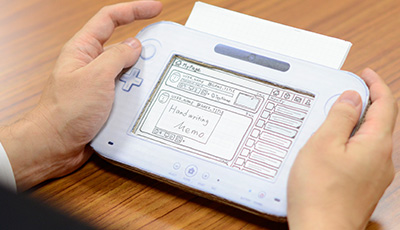 岩田 あ、ダンボール製ですか（笑）。 元山 はい。画面部分のフタが開いて、 上部分に紙を差し込んで、画面を変えられます。 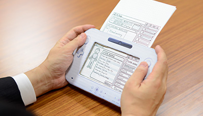 岩田 紙を差し込めるっていうのが、 たまらないですね（笑）。 一同 （笑）
本文の一部を引用される場合は、必ず、本ページのURLを明記、または本ページへのリンクをしていただくようお願いいたします。
1. “ゲーム機ならではのブラウザー”
2. 「Miiがいるだけで」
3. “共感”
4. “クラウド型ゲーム日記”